CODING AGENTS AS PIXEL WORLD MODELS
traex/DeepSeek-V4.1-Flash · 0045
点击播放 · 原生 RGB 像素
逐轮保存的候选
回放视频、检查图与代码变化。
每份候选均可单独播放。实际图片检查记录在下方工具轨迹中。
候选 01播放与检查图
点击播放 · 原生 RGB 像素

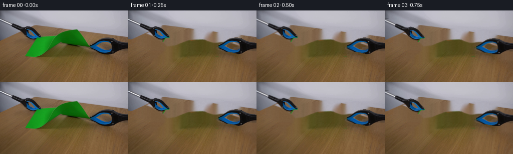
展开代码变化
--- 上一保存版本 +++ 本次保存版本 @@ -0,0 +1,379 @@ +from pathlib import Path + +import cv2 +import numpy as np + +import artifact_io + + +ROOT = Path(__file__).resolve().parent +BGR = cv2.imread(str(ROOT / "first_frame.png"), cv2.IMREAD_COLOR) +SOURCE = cv2.cvtColor(BGR, cv2.COLOR_BGR2RGB) +H, W = SOURCE.shape[:2] +N = 20 +SS = 4 + + +def smoothstep(x): + x = np.clip(x, 0.0, 1.0) + return x * x * (3.0 - 2.0 * x) + + +def mask_from_polygon(points, grow=0): + mask = np.zeros((H, W), np.uint8) + cv2.fillPoly(mask, [np.asarray(points, np.int32)], 255) + if grow: + k = np.ones((2 * grow + 1, 2 * grow + 1), np.uint8) + mask = cv2.dilate(mask, k) + return mask + + +LEFT_OUTLINE = np.array( + [ + (0, 16), (16, 17), (31, 23), (47, 29), (61, 34), (75, 41), + (91, 50), (95, 63), (84, 75), (70, 81), (53, 78), (42, 70), + (30, 64), (16, 58), (0, 55), + ], + np.int32, +) + +RIGHT_OUTLINE = np.array( + [ + (175, 50), (187, 45), (201, 45), (213, 50), (224, 56), + (236, 60), (248, 63), (256, 66), (256, 94), (242, 92), + (228, 89), (214, 84), (200, 81), (187, 80), (176, 75), + ], + np.int32, +) + +PAPER_OUTLINE = np.array( + [ + (75, 54), (128, 43), (154, 39), (180, 71), (121, 64), + (76, 93), (52, 92), + ], + np.int32, +) + + +def build_background(): + hsv = cv2.cvtColor(SOURCE, cv2.COLOR_RGB2HSV) + green = ( + (hsv[:, :, 0] >= 34) & (hsv[:, :, 0] <= 96) + & (hsv[:, :, 1] >= 68) & (hsv[:, :, 2] >= 18) + ) + paper = cv2.dilate(green.astype(np.uint8) * 255, np.ones((5, 5), np.uint8)) + paper = cv2.bitwise_or(paper, mask_from_polygon(PAPER_OUTLINE, 4)) + tools = cv2.bitwise_or( + mask_from_polygon(LEFT_OUTLINE, 4), + mask_from_polygon(RIGHT_OUTLINE, 4), + ) + fg = cv2.bitwise_or(paper, tools) + shadow = cv2.dilate(paper, np.ones((9, 9), np.uint8)) + shadow = np.roll(shadow, 4, axis=0) + fg = cv2.bitwise_or(fg, shadow) + plate = cv2.inpaint(SOURCE, fg, 5, cv2.INPAINT_NS) + + rng = np.random.default_rng(45) + noise = rng.normal(0.0, 2.2, (H, W)).astype(np.float32) + noise = cv2.GaussianBlur(noise, (0, 0), 0.8) + repaired = cv2.GaussianBlur(fg, (0, 0), 1.2).astype(np.float32) / 255.0 + plate = np.clip(plate.astype(np.float32) + noise[:, :, None] * repaired[:, :, None], 0, 255).astype(np.uint8) + return plate + + +BACKGROUND = build_background() + + +def tool_alpha(outline, blue_sat=26): + hsv = cv2.cvtColor(SOURCE, cv2.COLOR_RGB2HSV) + inside = mask_from_polygon(outline) > 0 + blue = ( + (hsv[:, :, 0] >= 94) & (hsv[:, :, 0] <= 136) + & (hsv[:, :, 1] >= blue_sat) + ) + dark = hsv[:, :, 2] < 98 + gray = (hsv[:, :, 1] < 55) & (hsv[:, :, 2] > 65) + green = ( + (hsv[:, :, 0] >= 35) & (hsv[:, :, 0] <= 90) + & (hsv[:, :, 1] >= 105) + ) + alpha = inside & (blue | dark | gray) & ~green + alpha = cv2.morphologyEx( + alpha.astype(np.uint8), cv2.MORPH_CLOSE, np.ones((5, 5), np.uint8) + ) + + count, labels, stats, _ = cv2.connectedComponentsWithStats(alpha) + chosen = np.zeros_like(alpha) + for i in range(1, count): + if stats[i, cv2.CC_STAT_AREA] >= 15: + chosen[labels == i] = 1 + + inv = cv2.bitwise_not(chosen) + count, labels, stats, _ = cv2.connectedComponentsWithStats(inv) + for i in range(1, count): + x, y, w, h, area = stats[i] + if area <= 42 and x > 0 and y > 0 and x + w < W and y + h < H: + chosen[labels == i] = 1 + chosen = cv2.dilate(chosen, np.ones((2, 2), np.uint8)) + return chosen + + +def crop_sprite(alpha): + ys, xs = np.where(alpha > 0) + x0, x1 = int(xs.min()), int(xs.max()) + 1 + y0, y1 = int(ys.min()), int(ys.max()) + 1 + return np.dstack((SOURCE[y0:y1, x0:x1], alpha[y0:y1, x0:x1] * 255)), (x0, y0) + + +LEFT_TOOL, LEFT_ORIGIN = crop_sprite(tool_alpha(LEFT_OUTLINE)) +RIGHT_TOOL, RIGHT_ORIGIN = crop_sprite(tool_alpha(RIGHT_OUTLINE, blue_sat=22)) + + +def paper_alpha(): + hsv = cv2.cvtColor(SOURCE, cv2.COLOR_RGB2HSV) + green = ( + (hsv[:, :, 0] >= 38) & (hsv[:, :, 0] <= 82) + & (hsv[:, :, 1] >= 105) & (hsv[:, :, 2] >= 24) + ) + alpha = cv2.morphologyEx( + green.astype(np.uint8), cv2.MORPH_CLOSE, np.ones((3, 3), np.uint8) + ) + # Fill interior color variation, but preserve the true ragged silhouette. + contour = max(cv2.findContours(alpha, cv2.RETR_EXTERNAL, cv2.CHAIN_APPROX_SIMPLE)[0], key=cv2.contourArea) + filled = np.zeros_like(alpha) + cv2.drawContours(filled, [contour], -1, 1, -1) + # Keep the polygon inside the observed green mask to avoid picking up shadows. + filled = cv2.bitwise_and(filled, mask_from_polygon(PAPER_OUTLINE, 1) // 255) + return filled + + +PAPER = paper_alpha() + + +def paper_texture(): + ys, xs = np.where(PAPER > 0) + x0, x1 = int(xs.min()), int(xs.max()) + 1 + y0, y1 = int(ys.min()), int(ys.max()) + 1 + rgb = SOURCE[y0:y1, x0:x1].copy() + alpha = PAPER[y0:y1, x0:x1] + + # Suppress grabber pixels that overhang the paper corners. + hsv = cv2.cvtColor(rgb, cv2.COLOR_RGB2HSV) + bad = ( + ((hsv[:, :, 0] >= 94) & (hsv[:, :, 0] <= 136) & (hsv[:, :, 1] >= 35)) + | (hsv[:, :, 2] < 62) + ) + bad = cv2.dilate(bad.astype(np.uint8), np.ones((3, 3), np.uint8)) + valid = (alpha > 0) & (bad == 0) + for _ in range(4): + blurred = cv2.GaussianBlur(rgb, (0, 0), 1.0) + fill = (valid == 0) & (alpha > 0) + rgb[fill] = blurred[fill] + valid = valid | (fill & (cv2.GaussianBlur(valid.astype(np.uint8), (0, 0), 1.0) > 0)) + return rgb, alpha, (x0, y0) + + +PAPER_RGB, PAPER_MASK, PAPER_ORIGIN = paper_texture() + + +def tear_curve(): + # Pixel coordinates on the visible center crease, with a small irregular path. + top = np.array([150.0, 39.0]) + bottom = np.array([121.0, 64.0]) + t = np.linspace(0, 1, 11) + curve = top[None, :] * (1 - t[:, None]) + bottom[None, :] * t[:, None] + delta = bottom - top + normal = np.array([-delta[1], delta[0]], float) + normal /= np.linalg.norm(normal) + jag = np.array([0, .55, -.25, .7, -.35, .65, -.45, .4, -.3, .45, 0]) + return curve + jag[:, None] * normal[None, :] + + +TEAR = tear_curve() + + +def pose(i): + pull = smoothstep((i - 1.2) / 8.8) + split = smoothstep((i - 8.0) / 7.6) + settle = smoothstep((i - 15.0) / 4.0) + wobble = np.sin((i - 7.5) * 1.45) * (1 - settle) * 0.30 + left_angle = -4.5 * pull + wobble + right_angle = 4.2 * pull - 0.6 * wobble + left_shift = np.array([-12.0 * pull, -6.0 * pull + 0.3 * wobble]) + right_shift = np.array([10.0 * pull, 7.5 * pull - 0.25 * wobble]) + gap = 5.2 * split + return left_angle, right_angle, left_shift, right_shift, gap + + +def make_mesh(side): + """Map source paper texture to a deforming triangulated mesh.""" + x0, y0 = PAPER_ORIGIN + h, w = PAPER_MASK.shape + cols, rows = 12, 8 + xs = np.linspace(x0, x0 + w - 1, cols) + ys = np.linspace(y0, y0 + h - 1, rows) + grid = np.array([(x, y) for y in ys for x in xs], np.float32) + + # Parameterize each side by its position relative to the center fold. + p0, p1 = TEAR[0], TEAR[-1] + direction = p1 - p0 + length2 = np.dot(direction, direction) + u = ((grid - p0) @ direction) / length2 + perp = np.array([-direction[1], direction[0]]) + v = ((grid - p0) @ perp) / np.linalg.norm(direction) + return grid, u, v + + +def render_paper(i): + left_angle, right_angle, left_shift, right_shift, gap = pose(i) + x0, y0 = PAPER_ORIGIN + h, w = PAPER_MASK.shape + + # Build the torn halves in source space using an alpha split. + yy, xx = np.mgrid[y0:y0 + h, x0:x0 + w] + # Point-to-line signed side of the tear centerline. + d = TEAR[-1] - TEAR[0] + signed = (xx - TEAR[0, 0]) * d[1] - (yy - TEAR[0, 1]) * d[0] + left_mask = PAPER_MASK.copy() + right_mask = PAPER_MASK.copy() + left_mask[signed > gap * 0.55] = 0 + right_mask[signed < -gap * 0.55] = 0 + + # Small separation is enough at 4 fps; the tear is visible through the ragged boundary. + left_rgb = PAPER_RGB.copy() + right_rgb = PAPER_RGB.copy() + left_rgb[left_mask == 0] = (15, 117, 17) + right_rgb[right_mask == 0] = (13, 104, 12) + + # Whole-paper affine pose, then an extra opposite translation for the split. + center = np.array([(x0 + w / 2), (y0 + h / 2)], np.float32) + M_left = cv2.getRotationMatrix2D(tuple(center), left_angle, 1.0) + M_right = cv2.getRotationMatrix2D(tuple(center), right_angle, 1.0) + M_left[:, 2] += left_shift + np.array([-gap * .35, -gap * .55]) + M_right[:, 2] += right_shift + np.array([gap * .35, gap * .55]) + + big = (w * SS, h * SS) + rgb_l = cv2.resize(left_rgb, big, interpolation=cv2.INTER_CUBIC) + rgb_r = cv2.resize(right_rgb, big, interpolation=cv2.INTER_CUBIC) + a_l = cv2.resize((left_mask * 255).astype(np.uint8), big, interpolation=cv2.INTER_LINEAR) + a_r = cv2.resize((right_mask * 255).astype(np.uint8), big, interpolation=cv2.INTER_LINEAR) + Mb_l = M_left.copy() + Mb_r = M_right.copy() + Mb_l[:, :2] *= SS + Mb_l[:, 2] *= SS + Mb_r[:, :2] *= SS + Mb_r[:, 2] *= SS + rgb_l = cv2.warpAffine(rgb_l, Mb_l, big, flags=cv2.INTER_CUBIC, borderMode=cv2.BORDER_REFLECT) + rgb_r = cv2.warpAffine(rgb_r, Mb_r, big, flags=cv2.INTER_CUBIC, borderMode=cv2.BORDER_REFLECT) + a_l = cv2.warpAffine(a_l, Mb_l, big, flags=cv2.INTER_LINEAR) + a_r = cv2.warpAffine(a_r, Mb_r, big, flags=cv2.INTER_LINEAR) + rgb_l = cv2.resize(rgb_l, (w, h), interpolation=cv2.INTER_AREA) + rgb_r = cv2.resize(rgb_r, (w, h), interpolation=cv2.INTER_AREA) + a_l = cv2.resize(a_l, (w, h), interpolation=cv2.INTER_AREA) + a_r = cv2.resize(a_r, (w, h), interpolation=cv2.INTER_AREA) + + # Lift the inner torn edges apart more than the gripped outer edges. + if i >= 8: + alpha_float = smoothstep((i - 8) / 5) + # Narrow pale edge on both halves. + edge_l = cv2.Canny(a_l, 20, 60) + edge_r = cv2.Canny(a_r, 20, 60) + edge_l = cv2.GaussianBlur(edge_l, (0, 0), .55) + edge_r = cv2.GaussianBlur(edge_r, (0, 0), .55) + rgb_l = np.clip(rgb_l.astype(np.float32) + edge_l[:, :, None] * alpha_float * 0.22, 0, 255).astype(np.uint8) + rgb_r = np.clip(rgb_r.astype(np.float32) + edge_r[:, :, None] * alpha_float * 0.20, 0, 255).astype(np.uint8) + + # Compose the two paper halves. + layer = np.zeros((h, w, 4), np.uint8) + layer[:, :, :3] = rgb_l + layer[:, :, 3] = a_l + la = a_l.astype(np.float32) / 255 + ra = a_r.astype(np.float32) / 255 + layer[:, :, :3] = np.clip(rgb_r * ra[:, :, None] + layer[:, :, :3] * (1 - ra[:, :, None]), 0, 255).astype(np.uint8) + layer[:, :, 3] = np.maximum(a_l, a_r) + return layer, (x0, y0), (left_angle, right_angle, left_shift, right_shift) + + +def warp_tool(sprite, origin, angle, translation): + h, w = sprite.shape[:2] + big = (w * SS, h * SS) + rgb = cv2.resize(sprite[:, :, :3], big, interpolation=cv2.INTER_NEAREST) + alpha = cv2.resize(sprite[:, :, 3], big, interpolation=cv2.INTER_LINEAR) + center = (big[0] / 2, big[1] / 2) + M = cv2.getRotationMatrix2D(center, angle, 1.0) + M[:, 2] += np.asarray(translation, np.float32) * SS + rgb = cv2.warpAffine(rgb, M, big, flags=cv2.INTER_NEAREST, borderMode=cv2.BORDER_CONSTANT) + alpha = cv2.warpAffine(alpha, M, big, flags=cv2.INTER_LINEAR, borderMode=cv2.BORDER_CONSTANT) + rgb = cv2.resize(rgb, (w, h), interpolation=cv2.INTER_AREA) + alpha = cv2.resize(alpha, (w, h), interpolation=cv2.INTER_AREA) + return np.dstack((rgb, alpha)), origin + + +def composite(frame, layer, origin): + x, y = origin + h, w = layer.shape[:2] + x0, y0 = max(0, x), max(0, y) + x1, y1 = min(W, x + w), min(H, y + h) + if x1 <= x0 or y1 <= y0: + return frame + sx0, sy0 = x0 - x, y0 - y + src = layer[sy0:sy0 + y1 - y0, sx0:sx0 + x1 - x0] + a = src[:, :, 3:4].astype(np.float32) / 255 + dst = frame[y0:y1, x0:x1] + frame[y0:y1, x0:x1] = np.clip(src[:, :, :3] * a + dst * (1 - a), 0, 255).astype(np.uint8) + return frame + + +def tool_motion(i, paper_pose): + la, ra, ls, rs = paper_pose + # Approximate the original grab contact points. + left_rest = np.array([77.0, 53.0]) + right_rest = np.array([179.0, 71.0]) + left_delta = ls + np.array([-1.5, 1.5]) * (i > 2) + right_delta = rs + np.array([1.5, 0.5]) * (i > 2) + return la, ra, left_delta, right_delta + + +def render(i): + if i == 0: + return SOURCE.copy() + frame = BACKGROUND.copy() + paper, paper_origin, paper_pose = render_paper(i) + + # Contact shadows before the foreground objects. + fg = paper[:, :, 3].astype(np.float32) / 255 + shadow = np.roll(cv2.GaussianBlur(fg, (0, 0), 2.0), 4, axis=0) + shadow = np.roll(shadow, 2, axis=1) + sx, sy = paper_origin + x0, y0 = max(0, sx), max(0, sy) + x1, y1 = min(W, sx + shadow.shape[1]), min(H, sy + shadow.shape[0]) + ss = shadow[y0 - sy:y1 - sy, x0 - sx:x1 - sx] + frame[y0:y1, x0:x1] = np.clip( + frame[y0:y1, x0:x1].astype(np.float32) * (1 - 0.22 * ss[:, :, None]), 0, 255 + ).astype(np.uint8) + composite(frame, paper, paper_origin) + + la, ra, ld, rd = tool_motion(i, paper_pose) + left = warp_tool(LEFT_TOOL, LEFT_ORIGIN, la, ld) + right = warp_tool(RIGHT_TOOL, RIGHT_ORIGIN, ra, rd) + composite(frame, left[0], left[1]) + composite(frame, right[0], right[1]) + return frame + + +def main(): + frames = np.stack([render(i) for i in range(N)]) + assert frames.shape == (20, 144, 256, 3) + assert frames.dtype == np.uint8 + assert np.array_equal(frames[0], SOURCE) + artifact_io.save(frames, ROOT) + writer = cv2.VideoWriter( + str(ROOT / "preview.mp4"), cv2.VideoWriter_fourcc(*"mp4v"), 4.0, (W, H) + ) + for frame in frames: + writer.write(cv2.cvtColor(frame, cv2.COLOR_RGB2BGR)) + writer.release() + + +if __name__ == "__main__": + main()
候选 02播放与检查图
点击播放 · 原生 RGB 像素

展开代码变化
--- 上一保存版本
+++ 本次保存版本
@@ -259,9 +259,7 @@
a_r = cv2.resize((right_mask * 255).astype(np.uint8), big, interpolation=cv2.INTER_LINEAR)
Mb_l = M_left.copy()
Mb_r = M_right.copy()
- Mb_l[:, :2] *= SS
Mb_l[:, 2] *= SS
- Mb_r[:, :2] *= SS
Mb_r[:, 2] *= SS
rgb_l = cv2.warpAffine(rgb_l, Mb_l, big, flags=cv2.INTER_CUBIC, borderMode=cv2.BORDER_REFLECT)
rgb_r = cv2.warpAffine(rgb_r, Mb_r, big, flags=cv2.INTER_CUBIC, borderMode=cv2.BORDER_REFLECT)
候选 03播放与检查图
点击播放 · 原生 RGB 像素
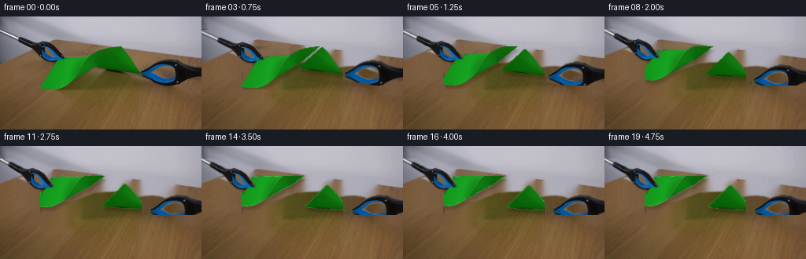
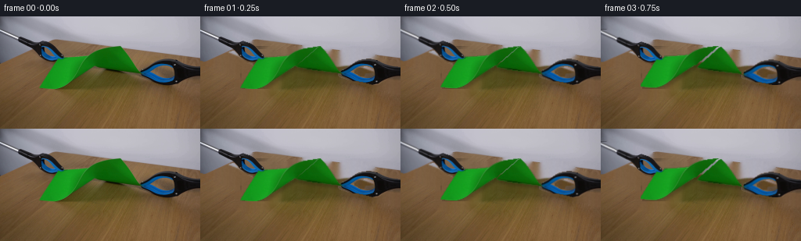
展开代码变化
--- 上一保存版本
+++ 本次保存版本
@@ -252,23 +252,24 @@
M_left[:, 2] += left_shift + np.array([-gap * .35, -gap * .55])
M_right[:, 2] += right_shift + np.array([gap * .35, gap * .55])
- big = (w * SS, h * SS)
- rgb_l = cv2.resize(left_rgb, big, interpolation=cv2.INTER_CUBIC)
- rgb_r = cv2.resize(right_rgb, big, interpolation=cv2.INTER_CUBIC)
- a_l = cv2.resize((left_mask * 255).astype(np.uint8), big, interpolation=cv2.INTER_LINEAR)
- a_r = cv2.resize((right_mask * 255).astype(np.uint8), big, interpolation=cv2.INTER_LINEAR)
- Mb_l = M_left.copy()
- Mb_r = M_right.copy()
- Mb_l[:, 2] *= SS
- Mb_r[:, 2] *= SS
- rgb_l = cv2.warpAffine(rgb_l, Mb_l, big, flags=cv2.INTER_CUBIC, borderMode=cv2.BORDER_REFLECT)
- rgb_r = cv2.warpAffine(rgb_r, Mb_r, big, flags=cv2.INTER_CUBIC, borderMode=cv2.BORDER_REFLECT)
- a_l = cv2.warpAffine(a_l, Mb_l, big, flags=cv2.INTER_LINEAR)
- a_r = cv2.warpAffine(a_r, Mb_r, big, flags=cv2.INTER_LINEAR)
- rgb_l = cv2.resize(rgb_l, (w, h), interpolation=cv2.INTER_AREA)
- rgb_r = cv2.resize(rgb_r, (w, h), interpolation=cv2.INTER_AREA)
- a_l = cv2.resize(a_l, (w, h), interpolation=cv2.INTER_AREA)
- a_r = cv2.resize(a_r, (w, h), interpolation=cv2.INTER_AREA)
+ # Source pixels are already at output resolution. One direct warp avoids
+ # the cumulative blur of an upscale/downscale round trip.
+ a_l = cv2.warpAffine(
+ (left_mask * 255).astype(np.uint8), M_left, (w, h),
+ flags=cv2.INTER_LINEAR, borderMode=cv2.BORDER_REFLECT,
+ )
+ a_r = cv2.warpAffine(
+ (right_mask * 255).astype(np.uint8), M_right, (w, h),
+ flags=cv2.INTER_LINEAR, borderMode=cv2.BORDER_REFLECT,
+ )
+ rgb_l = cv2.warpAffine(
+ left_rgb, M_left, (w, h),
+ flags=cv2.INTER_LINEAR, borderMode=cv2.BORDER_REFLECT,
+ )
+ rgb_r = cv2.warpAffine(
+ right_rgb, M_right, (w, h),
+ flags=cv2.INTER_LINEAR, borderMode=cv2.BORDER_REFLECT,
+ )
# Lift the inner torn edges apart more than the gripped outer edges.
if i >= 8:
候选 04播放与检查图
候选 05播放与检查图
点击播放 · 原生 RGB 像素

展开代码变化
--- 上一保存版本
+++ 本次保存版本
@@ -229,11 +229,14 @@
x0, y0 = PAPER_ORIGIN
h, w = PAPER_MASK.shape
- # Build the torn halves in source space using an alpha split.
+ # Build the torn halves in source space using an alpha split. The boundary
+ # wanders across the fold rather than following a clean diagonal.
yy, xx = np.mgrid[y0:y0 + h, x0:x0 + w]
- # Point-to-line signed side of the tear centerline.
d = TEAR[-1] - TEAR[0]
+ along = np.clip(((xx - TEAR[0, 0]) * d[0] + (yy - TEAR[0, 1]) * d[1]) / np.dot(d, d), 0, 1)
+ jag = 1.7 * np.sin(along * 37.0 + 0.8) + 0.9 * np.sin(along * 83.0 + 2.1)
signed = (xx - TEAR[0, 0]) * d[1] - (yy - TEAR[0, 1]) * d[0]
+ signed = signed + jag * np.linalg.norm(d)
left_mask = PAPER_MASK.copy()
right_mask = PAPER_MASK.copy()
left_mask[signed > gap * 0.55] = 0
@@ -249,8 +252,8 @@
center = np.array([(x0 + w / 2), (y0 + h / 2)], np.float32)
M_left = cv2.getRotationMatrix2D(tuple(center), left_angle, 1.0)
M_right = cv2.getRotationMatrix2D(tuple(center), right_angle, 1.0)
- M_left[:, 2] += left_shift + np.array([-gap * .35, -gap * .55])
- M_right[:, 2] += right_shift + np.array([gap * .35, gap * .55])
+ M_left[:, 2] += left_shift + np.array([-gap * .35, -gap * .48])
+ M_right[:, 2] += right_shift + np.array([gap * .35, gap * .40])
# Source pixels are already at output resolution. One direct warp avoids
# the cumulative blur of an upscale/downscale round trip.
候选 06播放与检查图
候选 07播放与检查图
点击播放 · 原生 RGB 像素
展开代码变化
--- 上一保存版本
+++ 本次保存版本
@@ -72,6 +72,33 @@
shadow = np.roll(shadow, 4, axis=0)
fg = cv2.bitwise_or(fg, shadow)
plate = cv2.inpaint(SOURCE, fg, 5, cv2.INPAINT_NS)
+
+ # Inpainting a large, thin foreground can carry its color into the reveal.
+ # Refit the tabletop from homogeneous clean patches outside the action area.
+ hsv = cv2.cvtColor(SOURCE, cv2.COLOR_RGB2HSV)
+ hh, ss, vv = cv2.split(hsv)
+ table_like = (
+ (hh >= 5) & (hh <= 35) & (ss >= 55) & (ss <= 220)
+ & (vv >= 35) & (vv <= 200)
+ )
+ clean = cv2.erode(table_like.astype(np.uint8), np.ones((7, 7), np.uint8)) > 0
+ yy, xx = np.mgrid[0:H, 0:W]
+ for row in range(35, H):
+ xs = np.flatnonzero(clean[row])
+ if len(xs) < 12:
+ continue
+ for channel in range(3):
+ coefficients = np.polyfit(xs, SOURCE[row, xs, channel], 2)
+ fitted = np.polyval(coefficients, xx[row])
+ plate[row, :, channel] = np.clip(fitted, 0, 255).astype(np.uint8)
+
+ # Keep real tabletop detail outside the repaired region.
+ original_weight = cv2.GaussianBlur((fg == 0).astype(np.float32), (0, 0), 1.1)
+ plate = np.clip(
+ plate.astype(np.float32) * (1.0 - original_weight[:, :, None])
+ + SOURCE.astype(np.float32) * original_weight[:, :, None],
+ 0, 255,
+ ).astype(np.uint8)
rng = np.random.default_rng(45)
noise = rng.normal(0.0, 2.2, (H, W)).astype(np.float32)
候选 08播放与检查图
点击播放 · 原生 RGB 像素
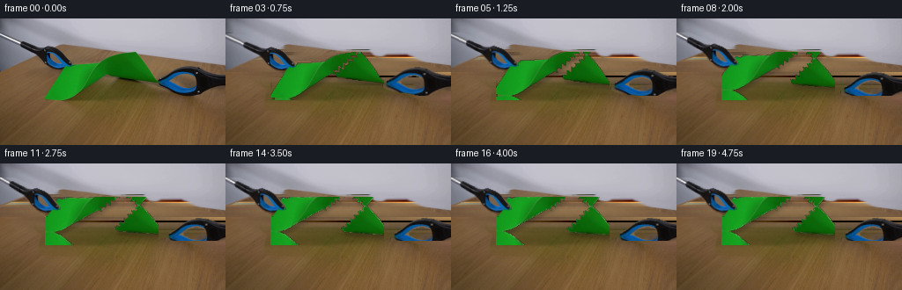
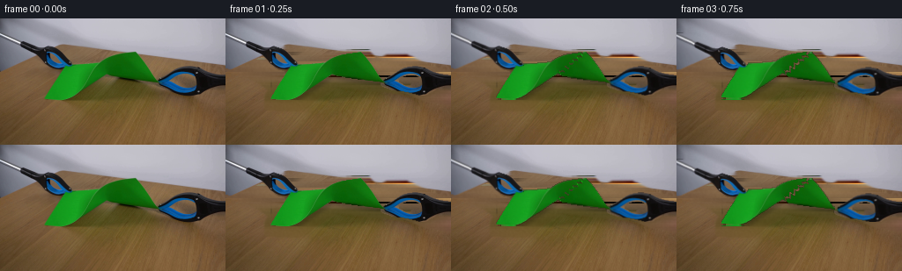
展开代码变化
--- 上一保存版本
+++ 本次保存版本
@@ -312,13 +312,15 @@
rgb_l = np.clip(rgb_l.astype(np.float32) + edge_l[:, :, None] * alpha_float * 0.22, 0, 255).astype(np.uint8)
rgb_r = np.clip(rgb_r.astype(np.float32) + edge_r[:, :, None] * alpha_float * 0.20, 0, 255).astype(np.uint8)
- # Compose the two paper halves.
- layer = np.zeros((h, w, 4), np.uint8)
- layer[:, :, :3] = rgb_l
- layer[:, :, 3] = a_l
+ # Compose the two paper halves. Each RGB sample is gated by its own
+ # warped alpha so the source crop's background never leaks into the layer.
la = a_l.astype(np.float32) / 255
ra = a_r.astype(np.float32) / 255
- layer[:, :, :3] = np.clip(rgb_r * ra[:, :, None] + layer[:, :, :3] * (1 - ra[:, :, None]), 0, 255).astype(np.uint8)
+ layer = np.zeros((h, w, 4), np.uint8)
+ layer[:, :, :3] = np.clip(
+ rgb_l * la[:, :, None] + rgb_r * ra[:, :, None],
+ 0, 255,
+ ).astype(np.uint8)
layer[:, :, 3] = np.maximum(a_l, a_r)
return layer, (x0, y0), (left_angle, right_angle, left_shift, right_shift)
候选 09播放与检查图
点击播放 · 原生 RGB 像素
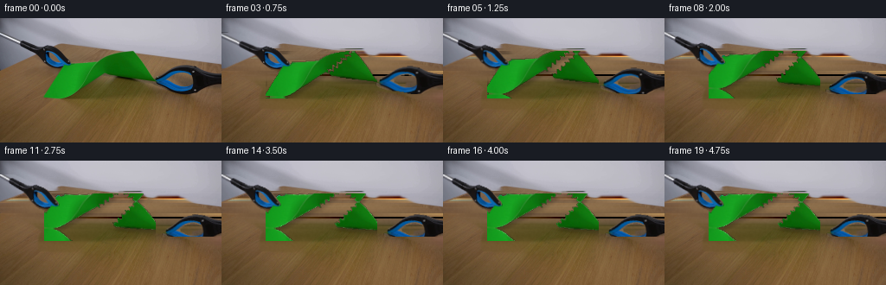
展开代码变化
--- 上一保存版本
+++ 本次保存版本
@@ -228,7 +228,7 @@
right_angle = 4.2 * pull - 0.6 * wobble
left_shift = np.array([-12.0 * pull, -6.0 * pull + 0.3 * wobble])
right_shift = np.array([10.0 * pull, 7.5 * pull - 0.25 * wobble])
- gap = 5.2 * split
+ gap = 3.0 * split
return left_angle, right_angle, left_shift, right_shift, gap
可观测工具轨迹
实际执行的命令与返回图片。
命令 1exit 0
/bin/bash -c "pwd && rg --files -g '"'!*.git*'"' | sed -n '1,120p'"
命令 2exit 0
/bin/bash -c "printf '%s\\n' '--- prompt.txt ---'; sed -n '1,240p' prompt.txt; printf '%s\\n' '--- GENERATION_RULES.md ---'; sed -n '1,280p' GENERATION_RULES.md"
命令 3exit 0
/bin/bash -c "file first_frame.png; identify first_frame.png 2>/dev/null || true; find . -maxdepth 2 -type f -printf '%p %s bytes\\n' | sort | sed -n '1,160p'"
命令 4exit 0
/bin/bash -c "sed -n '1,260p' artifact_io.py"
命令 5exit 0
/bin/bash -c "python - <<'PY'
from PIL import Image
im=Image.open('first_frame.png')
print(im.mode, im.size)
print(im.getpixel((0,0)), im.getpixel((128,72)), im.getpixel((255,143)))
try:
import cv2; print('cv2',cv2.__version__)
except Exception as e: print('no cv2',e)
try:
import numpy as np; print('numpy',np.__version__)
except Exception as e: print('no numpy',e)
try:
import scipy; print('scipy',scipy.__version__)
except Exception as e: print('no scipy',e)
PY"命令 6exit 0
/bin/bash -c "sed -n '1,260p' player_template.html"
命令 7exit 0
/bin/bash -c "python - <<'PY'
from PIL import Image
im=Image.open('first_frame.png')
im.resize((1024,576),Image.Resampling.NEAREST).save('.tmp/first_4x.png')
im.crop((35,20,225,105)).resize((760,340),Image.Resampling.NEAREST).save('.tmp/action_4x.png')
PY"命令 8exit 0
/bin/bash -c "python - <<'PY'
import cv2, numpy as np
im=cv2.imread('first_frame.png')
hsv=cv2.cvtColor(im,cv2.COLOR_BGR2HSV)
# paper: green hue 35-90, saturation >100, value >30
for name,sel in [
('green',(hsv[:,:,0]>=35)&(hsv[:,:,0]<=90)&(hsv[:,:,1]>=90)&(hsv[:,:,2]>=35)),
('blue',(hsv[:,:,0]>=90)&(hsv[:,:,0]<=125)&(hsv[:,:,1]>=110)&(hsv[:,:,2]>=70)),
('black',(hsv[:,:,2]<55)),
('white',(hsv[:,:,1]<30)&(hsv[:,:,2]>60))]:
ys,xs=np.where(sel)
print(name, sel.sum(), 'bbox', (xs.min(),ys.min(),xs.max(),ys.max()) if len(xs) else None)
# sample selected points RGB
for p in [(128,72),(100,75),(150,50),(160,60),(50,55),(60,55),(190,60),(220,70),(120,20),(30,110),(250,110)]:
x,y=p; print(p,im[y,x][::-1],hsv[y,x])
PY"命令 9exit 0
/bin/bash -c "python - <<'PY'
import cv2, numpy as np
im=cv2.imread('first_frame.png')
hsv=cv2.cvtColor(im,cv2.COLOR_BGR2HSV)
mask=((hsv[:,:,0]>=38)&(hsv[:,:,0]<=88)&(hsv[:,:,1]>=110)&(hsv[:,:,2]>=35)).astype(np.uint8)*255
mask=cv2.morphologyEx(mask,cv2.MORPH_CLOSE,np.ones((3,3),np.uint8))
mask=cv2.morphologyEx(mask,cv2.MORPH_OPEN,np.ones((2,2),np.uint8))
contours,_=cv2.findContours(mask,cv2.RETR_EXTERNAL,cv2.CHAIN_APPROX_SIMPLE)
for c in sorted(contours,key=cv2.contourArea,reverse=True)[:6]:
a=cv2.contourArea(c); print('area',a,'bbox',cv2.boundingRect(c)); print(cv2.approxPolyDP(c,1.5,True).reshape(-1,2).tolist())
# save mask overlay
out=im.copy(); out[mask>0]=(0,0,255)
cv2.imwrite('.tmp/green_mask.png',out)
PY"命令 10exit 1
/bin/bash -c "python - <<'PY'
import cv2, numpy as np
im=cv2.imread('first_frame.png')
hsv=cv2.cvtColor(im,cv2.COLOR_BGR2HSV)
mask=((hsv[:,:,0]>=35)&(hsv[:,:,0]<=90)&(hsv[:,:,1]>=95)&(hsv[:,:,2]>=25)).astype(np.uint8)*255
# inspect rows ranges and holes by x
for y in range(32,101,3):
xs=np.flatnonzero(mask[y]>0)
if len(xs): print(y, xs.min(), xs.max(), len(xs), [(int(a),int(b)) for a,b in cv2.connectedComponentsWithStats((mask[y:y+1]>0).astype(np.uint8),8)[2][1:,:4].tolist()])
# output enlarged overlay and mask itself
out=im.copy(); out[mask>0]=(0,0,255)
cv2.imwrite('.tmp/green_mask2.png',cv2.resize(out,(1024,576),interpolation=cv2.INTER_NEAREST))
cv2.imwrite('.tmp/mask2.png',cv2.resize(mask,(1024,576),interpolation=cv2.INTER_NEAREST))
PY"命令 11exit 0
/bin/bash -c "python - <<'PY'
import cv2, numpy as np
im=cv2.imread('first_frame.png')
hsv=cv2.cvtColor(im,cv2.COLOR_BGR2HSV)
mask=((hsv[:,:,0]>=35)&(hsv[:,:,0]<=90)&(hsv[:,:,1]>=95)&(hsv[:,:,2]>=25)).astype(np.uint8)*255
for y in range(32,101,3):
xs=np.flatnonzero(mask[y]>0)
if len(xs):
runs=[]; s=xs[0]; p=s
for x in xs[1:]:
if x"'!=p+1: runs.append((int(s),int(p))); s=x
p=x
runs.append((int(s),int(p)))
print(y, runs)
out=im.copy(); out[mask>0]=(0,0,255)
cv2.imwrite('"'.tmp/green_mask2.png',cv2.resize(out,(1024,576),interpolation=cv2.INTER_NEAREST))
cv2.imwrite('.tmp/mask2.png',cv2.resize(mask,(1024,576),interpolation=cv2.INTER_NEAREST))
PY"命令 12exit 0
/bin/bash -c "python - <<'PY'
import cv2, numpy as np
im=cv2.imread('first_frame.png'); hsv=cv2.cvtColor(im,cv2.COLOR_BGR2HSV)
# print exact rgb for points on paper and handle masks
for y in [38,40,42,45,48,50,52,55,58,60,62,65,68,70,72,75,80,85,90]:
print('y',y)
for x in [50,55,60,65,70,75,80,90,100,110,120,130,140,150,160,170,180,190,200,210,220]:
h,s,v=hsv[y,x]; r,g,b=im[y,x][::-1]
if (h>=35 and h<=90 and s>=95 and v>=25) or x in [55,60,65,70,75,80,90,100,110,120,130,140,150,160,170,180,190,200,210,220]: print(x,(int(r),int(g),int(b)),(int(h),int(s),int(v)),end='; ')
print()
PY"命令 13exit 0
/bin/bash -c "python - <<'PY'
from PIL import Image, ImageDraw, ImageFont
im=Image.open('first_frame.png').resize((1024,576),Image.Resampling.NEAREST)
d=ImageDraw.Draw(im)
for x in range(0,256,10):
d.line((x*4,0,x*4,576),fill=(255,0,0),width=1)
d.text((x*4+1,1),str(x),fill=(255,0,0))
for y in range(0,144,10):
d.line((0,y*4,1024,y*4),fill=(255,0,0),width=1)
d.text((1,y*4+1),str(y),fill=(255,0,0))
im.save('.tmp/grid.png')
PY"命令 14exit 0
/bin/bash -c "python - <<'PY'
import cv2, numpy as np
im=cv2.imread('first_frame.png')
h,w=im.shape[:2]
# paper threshold broad
hsv=cv2.cvtColor(im,cv2.COLOR_BGR2HSV)
paper=((hsv[:,:,0]>=35)&(hsv[:,:,0]<=95)&(hsv[:,:,1]>=80)&(hsv[:,:,2]>=20)).astype(np.uint8)*255
paper=cv2.morphologyEx(paper,cv2.MORPH_CLOSE,np.ones((3,3),np.uint8))
# fill broad central region based on contours, but only around actual paper
cnts,_=cv2.findContours(paper,cv2.RETR_EXTERNAL,cv2.CHAIN_APPROX_SIMPLE)
c=max(cnts,key=cv2.contourArea)
paperfill=np.zeros((h,w),np.uint8); cv2.drawContours(paperfill,[c],-1,255,-1)
# restrict not accidental
paperfill[:30]=0; paperfill[100:]=0
# left/right tools manual
left=np.zeros((h,w),np.uint8)
cv2.fillPoly(left,[np.array([(0,20),(14,21),(30,25),(43,30),(55,33),(67,39),(78,46),(83,55),(81,62),(74,69),(63,73),(52,71),(42,66),(34,60),(23,56),(12,52),(0,51)],np.int32)],255)
right=np.zeros((h,w),np.uint8)
cv2.fillPoly(right,[np.array([(178,72),(178,63),(183,54),(191,49),(200,48),(209,51),(216,58),(224,62),(235,65),(247,68),(255,71),(255,93),(244,91),(232,86),(220,82),(209,78),(198,76),(188,75)],np.int32)],255)
mask=cv2.bitwise_or(paperfill,left); mask=cv2.bitwise_or(mask,right)
# include local shadows/fringe
mask=cv2.dilate(mask,np.ones((3,3),np.uint8),iterations=1)
# inpaint
bg=cv2.inpaint(im,mask,4,cv2.INPAINT_TELEA)
# blur inpaint only a touch in masked area? save both
cv2.imwrite('.tmp/mask_all.png',mask)
cv2.imwrite('.tmp/bg_inpaint.png',bg)
# overlay mask
out=im.copy(); out[mask>0]=(0,0,255)
cv2.imwrite('.tmp/mask_overlay.png',cv2.resize(out,(1024,576),interpolation=cv2.INTER_NEAREST))
cv2.imwrite('.tmp/bg_inpaint_4x.png',cv2.resize(bg,(1024,576),interpolation=cv2.INTER_NEAREST))
PY"命令 15exit 0
/bin/bash -c "python - <<'PY'
import cv2, numpy as np
im=cv2.imread('first_frame.png')
# render simple bg mask made by manually replacing center/action area via patch median across y based on paper polygon and tool polygons
# first fit tabletop row median from sides
h,w=im.shape[:2]
bg=im.copy()
# reconstruct row via interpolation between left x 0..45 and right x 230..255, but paper only y>45, tools may contaminate. Use smooth scanline interp based on median local line y relation
# For each row, use pixels x 80..170 but identify non-paper via broad heuristic. use known tabletop chromatic color and paper/tool mask
hsv=cv2.cvtColor(im,cv2.COLOR_BGR2HSV)
paper=((hsv[:,:,0]>=35)&(hsv[:,:,0]<=95)&(hsv[:,:,1]>=80)&(hsv[:,:,2]>=20))
blue=((hsv[:,:,0]>=95)&(hsv[:,:,0]<=120)&(hsv[:,:,1]>=80))
black=(hsv[:,:,2]<60)
# Tool foreground masks manually broad
fg=paper|blue|black
# preserve wall y<35
for y in range(35,144):
# local usable tabletop pixels excluding fg. fit polynomial x,y to rgb across image row and nearby
valid=~fg[max(0,y-3):min(h,y+4)].any(axis=0)
xs=np.flatnonzero(valid)
# use only tabletop plausible x>25 and avoid vertical artifacts; interpolate rgb row based on valid pixels, smoothing
if len(xs)>8:
vals=np.median(im[max(0,y-3):min(h,y+4)][:,xs],axis=0)
# interpolate each channel through xs with extrapolate constant; but background mostly horizontally smooth
for c in range(3):
# fit line robustly via polyfit on samples
coef=np.polyfit(xs,im[max(0,y-3):min(h,y+4),:,c][:,xs].mean(axis=0),2)
pred=np.polyval(coef,np.arange(w))
bg[y,:,c]=np.clip(pred,0,255).astype(np.uint8)
# replace only where fg
mask=cv2.dilate(fg.astype(np.uint8),np.ones((5,5),np.uint8),iterations=2)>0
bg[mask]=im[mask] # noop
# use inpaint as second try with mask only fg dilated + polygon fill
PY"命令 16exit 0
/bin/bash -c "python - <<'PY'
import cv2,numpy as np
im=cv2.imread('first_frame.png'); hsv=cv2.cvtColor(im,cv2.COLOR_BGR2HSV)
leftpoly=np.array([(0,18),(15,18),(30,24),(45,29),(58,33),(72,40),(85,47),(88,60),(80,72),(67,78),(53,75),(43,68),(30,61),(16,55),(0,52)],np.int32)
rightpoly=np.array([(176,73),(176,62),(182,52),(192,46),(204,47),(216,55),(228,61),(241,64),(256,68),(256,98),(242,94),(228,89),(215,84),(203,80),(190,77)],np.int32)
for name,poly in [('left',leftpoly),('right',rightpoly)]:
pm=np.zeros(im.shape[:2],np.uint8); cv2.fillPoly(pm,[poly],255)
col=(((hsv[:,:,0]>=90)&(hsv[:,:,0]<=130)&(hsv[:,:,1]>=70))|(hsv[:,:,2]<75)|((hsv[:,:,1]<55)&(hsv[:,:,2]>70))).astype(np.uint8)*255
m=cv2.bitwise_and(pm,col)
m=cv2.morphologyEx(m,cv2.MORPH_CLOSE,np.ones((3,3),np.uint8))
m=cv2.dilate(m,np.ones((2,2),np.uint8))
# remove tiny comps
n,lab,stats,cents=cv2.connectedComponentsWithStats(m)
out=np.zeros_like(m)
for i in range(1,n):
if stats[i,cv2.CC_STAT_AREA]>15: out[lab==i]=255
ys,xs=np.where(out>0); x0,x1,y0,y1=xs.min(),xs.max()+1,ys.min(),ys.max()+1
print(name,(x0,y0,x1,y1),out.sum())
rgba=np.dstack([im[y0:y1,x0:x1],out[y0:y1,x0:x1]])
# checker
bg=np.indices((y1-y0,x1-x0)).sum(0)//6%2*60+80
bg=np.dstack([bg,bg,bg]).astype(np.uint8)
a=rgba[:,:,3:4]/255
comp=(rgba[:,:,:3]*a+bg*(1-a)).astype(np.uint8)
cv2.imwrite(f'.tmp/{name}_sprite.png',cv2.resize(comp,None,fx=5,fy=5,interpolation=cv2.INTER_NEAREST))
cv2.imwrite(f'.tmp/{name}_mask.png',cv2.resize(out[y0:y1,x0:x1],None,fx=5,fy=5,interpolation=cv2.INTER_NEAREST))
PY"命令 17exit 0
/bin/bash -c "python - <<'PY'
import cv2,numpy as np
im=cv2.imread('first_frame.png'); hsv=cv2.cvtColor(im,cv2.COLOR_BGR2HSV)
# print key pixels for blue/tool and handle body, compare paper
for p in [(75,50),(70,53),(65,55),(60,58),(78,47),(80,52),(88,55),(90,50),(190,68),(200,65),(210,70),(220,75),(190,75),(175,65),(170,55),(165,58)]:
x,y=p; print(p,im[y,x][::-1],hsv[y,x])
PY"命令 18exit 0
/bin/bash -c "python - <<'PY'
import cv2,numpy as np
im=cv2.imread('first_frame.png'); hsv=cv2.cvtColor(im,cv2.COLOR_BGR2HSV)
leftpoly=np.array([(0,18),(15,18),(30,24),(45,29),(58,33),(72,40),(85,47),(88,60),(80,72),(67,78),(53,75),(43,68),(30,61),(16,55),(0,52)],np.int32)
rightpoly=np.array([(176,73),(176,62),(182,52),(192,46),(204,47),(216,55),(228,61),(241,64),(256,68),(256,98),(242,94),(228,89),(215,84),(203,80),(190,77)],np.int32)
for name,poly in [('left',leftpoly),('right',rightpoly)]:
pm=np.zeros(im.shape[:2],np.uint8); cv2.fillPoly(pm,[poly],255)
# non-table color: blue, dark black, grey
col=(((hsv[:,:,0]>=90)&(hsv[:,:,0]<=130)&(hsv[:,:,1]>=70))|(hsv[:,:,2]<55)|((hsv[:,:,1]<55)&(hsv[:,:,2]>60)))
# broaden blue low sat
col|=((hsv[:,:,0]>=90)&(hsv[:,:,0]<=130)&(hsv[:,:,1]>=50))
m=cv2.bitwise_and(pm,col.astype(np.uint8)*255)
m=cv2.morphologyEx(m,cv2.MORPH_CLOSE,np.ones((3,3),np.uint8))
# include connected edge halo around non-table parts
m=cv2.dilate(m,np.ones((2,2),np.uint8))
# keep largest comps only
n,lab,stats,_=cv2.connectedComponentsWithStats(m)
out=np.zeros_like(m)
for i in range(1,n):
if stats[i,cv2.CC_STAT_AREA]>10: out[lab==i]=255
ys,xs=np.where(out>0); x0,x1,y0,y1=xs.min(),xs.max()+1,ys.min(),ys.max()+1
print(name,(x0,y0,x1,y1),np.count_nonzero(out))
rgba=np.dstack([im[y0:y1,x0:x1],out[y0:y1,x0:x1]])
bg=np.indices((y1-y0,x1-x0)).sum(0)//6%2*60+80
bg=np.dstack([bg,bg,bg]).astype(np.uint8)
a=rgba[:,:,3:4]/255
comp=(rgba[:,:,:3]*a+bg*(1-a)).astype(np.uint8)
cv2.imwrite(f'.tmp/{name}_sprite.png',cv2.resize(comp,None,fx=5,fy=5,interpolation=cv2.INTER_NEAREST))
cv2.imwrite(f'.tmp/{name}_mask.png',cv2.resize(out[y0:y1,x0:x1],None,fx=5,fy=5,interpolation=cv2.INTER_NEAREST))
PY"命令 19exit 0
/bin/bash -c "python - <<'PY'
import cv2,numpy as np
im=cv2.imread('first_frame.png'); hsv=cv2.cvtColor(im,cv2.COLOR_BGR2HSV)
leftpoly=np.array([(0,18),(15,18),(30,24),(45,29),(58,33),(72,40),(85,47),(88,60),(80,72),(67,78),(53,75),(43,68),(30,61),(16,55),(0,52)],np.int32)
rightpoly=np.array([(176,73),(176,62),(182,52),(192,46),(204,47),(216,55),(228,61),(241,64),(256,68),(256,98),(242,94),(228,89),(215,84),(203,80),(190,77)],np.int32)
for name,poly in [('left',leftpoly),('right',rightpoly)]:
pm=np.zeros(im.shape[:2],np.uint8); cv2.fillPoly(pm,[poly],255)
col=(((hsv[:,:,0]>=90)&(hsv[:,:,0]<=130)&(hsv[:,:,1]>=50))|(hsv[:,:,2]<60)|((hsv[:,:,1]<60)&(hsv[:,:,2]>65)))
m=cv2.bitwise_and(pm,col.astype(np.uint8)*255)
m=cv2.morphologyEx(m,cv2.MORPH_CLOSE,np.ones((5,5),np.uint8))
m=cv2.dilate(m,np.ones((2,2),np.uint8))
n,lab,stats,_=cv2.connectedComponentsWithStats(m)
out=np.zeros_like(m)
for i in range(1,n):
if stats[i,cv2.CC_STAT_AREA]>20: out[lab==i]=255
ys,xs=np.where(out>0); x0,x1,y0,y1=xs.min(),xs.max()+1,ys.min(),ys.max()+1
print(name,(x0,y0,x1,y1),np.count_nonzero(out))
rgba=np.dstack([im[y0:y1,x0:x1],out[y0:y1,x0:x1]])
bg=np.indices((y1-y0,x1-x0)).sum(0)//6%2*60+80
bg=np.dstack([bg,bg,bg]).astype(np.uint8)
a=rgba[:,:,3:4]/255
comp=(rgba[:,:,:3]*a+bg*(1-a)).astype(np.uint8)
cv2.imwrite(f'.tmp/{name}_sprite2.png',cv2.resize(comp,None,fx=5,fy=5,interpolation=cv2.INTER_NEAREST))
cv2.imwrite(f'.tmp/{name}_mask2.png',cv2.resize(out[y0:y1,x0:x1],None,fx=5,fy=5,interpolation=cv2.INTER_NEAREST))
PY"命令 20exit 0
/bin/bash -c "python - <<'PY'
import cv2,numpy as np
im=cv2.imread('first_frame.png'); hsv=cv2.cvtColor(im,cv2.COLOR_BGR2HSV)
for p in [(190,55),(190,58),(190,60),(195,55),(195,60),(200,55),(200,60),(205,55),(205,60),(210,60),(220,60),(230,60),(240,60),(250,60),(250,80),(240,80),(230,80),(220,80),(210,80),(200,80)]:
x,y=p; print(p, im[y,x][::-1],hsv[y,x])
PY"命令 21exit 0
/bin/bash -c "python - <<'PY'
import cv2,numpy as np
im=cv2.imread('first_frame.png'); hsv=cv2.cvtColor(im,cv2.COLOR_BGR2HSV)
leftpoly=np.array([(0,17),(16,18),(31,24),(47,30),(60,34),(74,41),(88,48),(90,61),(82,72),(69,79),(53,76),(42,68),(30,62),(16,56),(0,53)],np.int32)
rightpoly=np.array([(175,74),(175,61),(181,51),(191,45),(203,45),(214,51),(224,58),(234,62),(246,65),(256,67),(256,101),(243,96),(230,90),(217,85),(204,81),(190,78)],np.int32)
# assign each pixel in polygons to tool unless green hue 48-75 sat high
for name,poly in [('left',leftpoly),('right',rightpoly)]:
pm=np.zeros(im.shape[:2],np.uint8); cv2.fillPoly(pm,[poly],255)
paper=((hsv[:,:,0]>=48)&(hsv[:,:,0]<=78)&(hsv[:,:,1]>=120)&(hsv[:,:,2]>=20))
# include any non-table via distance from local tabletop hue/sat? tool object broad
tool=pm.astype(bool)&(~paper)
# exclude obvious table pixels: hue 10-30, sat 80-180, val 50-160 and not adjacent?
table=((hsv[:,:,0]>=8)&(hsv[:,:,0]<=32)&(hsv[:,:,1]>=65)&(hsv[:,:,1]<=190)&(hsv[:,:,2]>=45)&(hsv[:,:,2]<=180))
tool &= ~table
# clean close
m=tool.astype(np.uint8)*255
m=cv2.morphologyEx(m,cv2.MORPH_CLOSE,np.ones((5,5),np.uint8))
n,lab,stats,_=cv2.connectedComponentsWithStats(m)
out=np.zeros_like(m)
for i in range(1,n):
if stats[i,cv2.CC_STAT_AREA]>20: out[lab==i]=255
ys,xs=np.where(out>0); x0,x1,y0,y1=xs.min(),xs.max()+1,ys.min(),ys.max()+1
print(name,(x0,y0,x1,y1),np.count_nonzero(out))
rgba=np.dstack([im[y0:y1,x0:x1],out[y0:y1,x0:x1]])
bg=np.indices((y1-y0,x1-x0)).sum(0)//6%2*60+80
bg=np.dstack([bg,bg,bg]).astype(np.uint8)
a=rgba[:,:,3:4]/255
comp=(rgba[:,:,:3]*a+bg*(1-a)).astype(np.uint8)
cv2.imwrite(f'.tmp/{name}_sprite3.png',cv2.resize(comp,None,fx=5,fy=5,interpolation=cv2.INTER_NEAREST))
cv2.imwrite(f'.tmp/{name}_mask3.png',cv2.resize(out[y0:y1,x0:x1],None,fx=5,fy=5,interpolation=cv2.INTER_NEAREST))
PY"命令 22exit 0
/bin/bash -c "python - <<'PY'
import cv2,numpy as np
im=cv2.imread('first_frame.png'); hsv=cv2.cvtColor(im,cv2.COLOR_BGR2HSV)
for p in [(181,48),(181,49),(181,50),(181,51),(181,52),(181,53),(181,54),(181,55),(181,56),(181,57),(181,58),(181,59),(181,60),(181,61),(181,62),(181,63),(181,64),(181,65),(181,66),(181,67),(181,68),(181,69),(181,70)]:
x,y=p; print(p, im[y,x][::-1],hsv[y,x])
PY"命令 23exit 0
/bin/bash -c "python - <<'PY'
from PIL import Image
im=Image.open('first_frame.png')
im.crop((45,34,186,96)).resize((1128,496),Image.Resampling.LANCZOS).save('.tmp/paper_8x.png')
PY"命令 24exit 0
/bin/bash -c "python - <<'PY'
from PIL import Image,ImageDraw
im=Image.open('first_frame.png')
for name,box in [('left',(0,15,92,85)),('right',(170,43,256,104)),('paper',(43,32,186,99))]:
c=im.crop(box); c.resize((c.width*8,c.height*8),Image.Resampling.LANCZOS).save(f'.tmp/{name}_8x.png')
PY"命令 25exit 0
/bin/bash -c "python - <<'PY'
import cv2,numpy as np
im=cv2.imread('first_frame.png'); hsv=cv2.cvtColor(im,cv2.COLOR_BGR2HSV)
# show masks for green and blue; color coded
p=((hsv[:,:,0]>=40)&(hsv[:,:,0]<=90)&(hsv[:,:,1]>=80)&(hsv[:,:,2]>=20))
b=((hsv[:,:,0]>=95)&(hsv[:,:,0]<=130)&(hsv[:,:,1]>=70))
o=np.zeros_like(im); o[p]=(0,255,0); o[b]=(255,0,0)
cv2.imwrite('.tmp/color_masks.png',cv2.resize(o,(1024,576),interpolation=cv2.INTER_NEAREST))
PY"命令 26exit 1
/bin/bash -c "python - <<'PY'
import cv2,numpy as np
im=cv2.imread('first_frame.png').astype(float); hsv=cv2.cvtColor(im.astype(np.uint8),cv2.COLOR_BGR2HSV)
h,w=im.shape[:2]
# initial broad fg exclusion
green=((hsv[:,:,0]>=35)&(hsv[:,:,0]<=95)&(hsv[:,:,1]>=75)&(hsv[:,:,2]>=20))
leftpoly=np.array([(0,15),(18,16),(35,22),(55,29),(75,39),(92,48),(94,64),(82,76),(66,82),(50,79),(35,70),(18,60),(0,55)],np.int32)
rightpoly=np.array([(173,77),(173,59),(179,49),(190,43),(204,43),(217,50),(228,58),(240,63),(256,66),(256,103),(241,98),(227,91),(213,86),(199,82),(185,80)],np.int32)
pm=np.zeros((h,w),np.uint8);cv2.fillPoly(pm,[leftpoly,rightpoly],255)
# use color exclusion plus edge halos
blue=((hsv[:,:,0]>=90)&(hsv[:,:,0]<=135)&(hsv[:,:,1]>=40))
dark=hsv[:,:,2]<70
gray=(hsv[:,:,1]<45)&(hsv[:,:,2]>65)
fg=green|((blue|dark|gray)&(pm>0))
fg=cv2.dilate(fg.astype(np.uint8),np.ones((5,5),np.uint8),iterations=1)>0
# fit polynomial deg 4 only table y>=34, not fg
Y,X=np.mgrid[0:h,0:w]
xn=(X-127.5)/127.5; yn=(Y-90)/55
terms=[]
for i in range(5):
for j in range(5-i): terms.append((xn**i)*(yn**j))
A=np.stack([t.ravel() for t in terms],axis=1)
valid=((Y>=34)&(~fg)).ravel()
pred=np.zeros_like(im)
coefs=[]
for c in range(3):
coef=np.linalg.lstsq(A[valid],im[:,:,c].ravel()[valid],rcond=None)[0]
coefs.append(coef); pred[:,:,c]=A@coef
pred=np.clip(pred,0,255).astype(np.uint8)
# Keep original exact outside central potential reveal? We'll inspect fill only
bg=im.astype(np.uint8).copy(); bg[34:]=pred[34:]
# Add residual-like procedural grain from valid residual statistics maybe later
cv2.imwrite('.tmp/bg_poly.png',bg)
cv2.imwrite('.tmp/bg_poly_4x.png',cv2.resize(bg,(1024,576),interpolation=cv2.INTER_NEAREST))
diff=np.linalg.norm(im-pred,axis=2)
vis=np.clip(diff*2,0,255).astype(np.uint8)
cv2.imwrite('.tmp/diff.png',vis)
print('coefs',coefs)
print('resid valid p50 p90 p99',np.percentile(diff.ravel()[valid],[50,90,99]))
PY"命令 27exit 0
/bin/bash -c "python - <<'PY'
import cv2,numpy as np
im=cv2.imread('first_frame.png').astype(float); hsv=cv2.cvtColor(im.astype(np.uint8),cv2.COLOR_BGR2HSV)
h,w=im.shape[:2]
green=((hsv[:,:,0]>=35)&(hsv[:,:,0]<=95)&(hsv[:,:,1]>=75)&(hsv[:,:,2]>=20))
leftpoly=np.array([(0,15),(18,16),(35,22),(55,29),(75,39),(92,48),(94,64),(82,76),(66,82),(50,79),(35,70),(18,60),(0,55)],np.int32)
rightpoly=np.array([(173,77),(173,59),(179,49),(190,43),(204,43),(217,50),(228,58),(240,63),(256,66),(256,103),(241,98),(227,91),(213,86),(199,82),(185,80)],np.int32)
pm=np.zeros((h,w),np.uint8);cv2.fillPoly(pm,[leftpoly,rightpoly],255)
blue=((hsv[:,:,0]>=90)&(hsv[:,:,0]<=135)&(hsv[:,:,1]>=40))
dark=hsv[:,:,2]<70
gray=(hsv[:,:,1]<45)&(hsv[:,:,2]>65)
fg=green|((blue|dark|gray)&(pm>0))
fg=cv2.dilate(fg.astype(np.uint8),np.ones((5,5),np.uint8),iterations=1)>0
Y,X=np.mgrid[0:h,0:w]
xn=(X-127.5)/127.5; yn=(Y-90)/55
terms=[]
for i in range(5):
for j in range(5-i): terms.append((xn**i)*(yn**j))
A=np.stack([t.ravel() for t in terms],axis=1)
valid=((Y>=34)&(~fg)).ravel()
pred=np.zeros_like(im)
for c in range(3):
coef=np.linalg.lstsq(A[valid],im[:,:,c].ravel()[valid],rcond=None)[0]
pred[:,:,c]=(A@coef).reshape(h,w)
pred=np.clip(pred,0,255).astype(np.uint8)
bg=im.astype(np.uint8).copy(); bg[34:]=pred[34:]
cv2.imwrite('.tmp/bg_poly.png',bg)
cv2.imwrite('.tmp/bg_poly_4x.png',cv2.resize(bg,(1024,576),interpolation=cv2.INTER_NEAREST))
diff=np.linalg.norm(im-pred,axis=2)
cv2.imwrite('.tmp/diff.png',np.clip(diff*2,0,255).astype(np.uint8))
print('resid valid p50 p90 p99',np.percentile(diff.ravel()[valid],[50,90,99]))
PY"命令 28exit 0
/bin/bash -c "python - <<'PY'
import cv2,numpy as np
im=cv2.imread('first_frame.png')
# print border tabletop smoothness and use row interpolation from left/right uncontaminated zones with y-dependent RGB
for x in [0,10,20,30,40,210,220,230,240,250,255]:
print(x,[tuple(int(v) for v in im[y,x][::-1]) for y in [40,60,80,100,120,140]])
PY"命令 29exit 0
/bin/bash -c "python - <<'PY'
from PIL import Image
im=Image.open('first_frame.png')
im.crop((145,35,200,95)).resize((660,720),Image.Resampling.LANCZOS).save('.tmp/touch_12x.png')
PY"命令 30exit 0
/bin/bash -c "python - <<'PY'
import cv2,numpy as np
im=cv2.imread('first_frame.png'); hsv=cv2.cvtColor(im,cv2.COLOR_BGR2HSV)
# For right, threshold all blue and dark around handle with polygon; build mask via geodesic expansion from seed color components
poly=np.zeros(im.shape[:2],np.uint8); cv2.fillPoly(poly,[np.array([(176,48),(185,44),(198,44),(210,49),(222,56),(235,61),(248,64),(256,66),(256,103),(240,97),(226,90),(212,84),(199,80),(186,79),(177,74)],np.int32)],255)
col=((hsv[:,:,0]>=90)&(hsv[:,:,0]<=135)&(hsv[:,:,1]>=25))|(hsv[:,:,2]<85)
m=(poly>0)&col
# Remove green contamination
m &= ~((hsv[:,:,0]>=45)&(hsv[:,:,0]<=80)&(hsv[:,:,1]>=120))
# morphological close fill small holes and dilate edge
m=cv2.morphologyEx(m.astype(np.uint8),cv2.MORPH_CLOSE,np.ones((7,7),np.uint8))
m=cv2.dilate(m,np.ones((2,2),np.uint8))
# only connected comps intersect seed blue at x205 y80 / dark x220 y60
n,lab,stats,_=cv2.connectedComponentsWithStats(m)
ids=set([lab[80,205],lab[60,220],lab[65,250]])
out=np.isin(lab,list(ids)).astype(np.uint8)*255
ys,xs=np.where(out>0); x0,x1,y0,y1=xs.min(),xs.max()+1,ys.min(),ys.max()+1
print(ids,(x0,y0,x1,y1),np.count_nonzero(out))
rgba=np.dstack([im[y0:y1,x0:x1],out[y0:y1,x0:x1]])
bg=np.indices((y1-y0,x1-x0)).sum(0)//6%2*60+80; bg=np.dstack([bg,bg,bg]).astype(np.uint8)
a=rgba[:,:,3:4]/255; comp=(rgba[:,:,:3]*a+bg*(1-a)).astype(np.uint8)
cv2.imwrite('.tmp/right_sprite4.png',cv2.resize(comp,None,fx=5,fy=5,interpolation=cv2.INTER_NEAREST))
cv2.imwrite('.tmp/right_mask4.png',cv2.resize(out[y0:y1,x0:x1],None,fx=5,fy=5,interpolation=cv2.INTER_NEAREST))
PY"命令 31exit 0
/bin/bash -c "python - <<'PY'
import cv2,numpy as np
im=cv2.imread('first_frame.png'); hsv=cv2.cvtColor(im,cv2.COLOR_BGR2HSV)
poly=np.zeros(im.shape[:2],np.uint8); cv2.fillPoly(poly,[np.array([(174,48),(185,43),(198,43),(210,48),(222,55),(235,60),(248,64),(256,66),(256,104),(240,98),(226,91),(212,85),(199,81),(186,80),(174,76)],np.int32)],255)
# broad any non-table inside poly: table hue around 10-25 and smooth; use edge / blue / dark / gray
table=((hsv[:,:,0]>=8)&(hsv[:,:,0]<=32)&(hsv[:,:,1]>=70)&(hsv[:,:,1]<=210)&(hsv[:,:,2]>=50))
m=(poly>0)&(~table)
# reject green paper
m &= ~((hsv[:,:,0]>=35)&(hsv[:,:,0]<=90)&(hsv[:,:,1]>=100))
# Fill enclosed holes by contours on mask if connected
m=cv2.morphologyEx(m.astype(np.uint8),cv2.MORPH_CLOSE,np.ones((3,3),np.uint8))
# largest comp
n,lab,stats,_=cv2.connectedComponentsWithStats(m)
i=1+np.argmax(stats[1:,cv2.CC_STAT_AREA])
out=(lab==i).astype(np.uint8)*255
# fill holes by flood fill
ff=out.copy(); hh,ww=ff.shape; mm=np.zeros((hh+2,ww+2),np.uint8); cv2.floodFill(ff,mm,(0,0),255); holes=cv2.bitwise_not(ff); out=cv2.bitwise_or(out,holes)
# but holes includes exterior? flood makes bg 255 and holes 0, so yes fill
out=cv2.bitwise_and(out,poly)
# small blur alpha later. output
ys,xs=np.where(out>0); x0,x1,y0,y1=xs.min(),xs.max()+1,ys.min(),ys.max()+1
print((x0,y0,x1,y1),np.count_nonzero(out))
rgba=np.dstack([im[y0:y1,x0:x1],out[y0:y1,x0:x1]])
bg=np.indices((y1-y0,x1-x0)).sum(0)//6%2*60+80; bg=np.dstack([bg,bg,bg]).astype(np.uint8)
a=rgba[:,:,3:4]/255; comp=(rgba[:,:,:3]*a+bg*(1-a)).astype(np.uint8)
cv2.imwrite('.tmp/right_sprite5.png',cv2.resize(comp,None,fx=5,fy=5,interpolation=cv2.INTER_NEAREST))
PY"命令 32exit 0
/bin/bash -c "python - <<'PY'
import cv2,numpy as np
im=cv2.imread('first_frame.png'); hsv=cv2.cvtColor(im,cv2.COLOR_BGR2HSV)
# inside right poly, print row y=75 x=176..210
for y in [45,48,50,52,55,58,60,62,65,68,70,72,74,76,78,80,82,85,88,90]:
vals=[]
for x in range(174,211):
h,s,v=hsv[y,x]; r,g,b=im[y,x][::-1]
if not (8<=h<=32 and 70<=s<=210 and 50<=v): vals.append((x,(int(r),int(g),int(b)),(int(h),int(s),int(v))))
print(y,vals[:8])
PY"命令 33exit 0
/bin/bash -c "python - <<'PY'
import cv2,numpy as np
im=cv2.imread('first_frame.png')
# create labels for connected components under masks with thresholds
hsv=cv2.cvtColor(im,cv2.COLOR_BGR2HSV)
for name,mask in [('non_table', ((hsv[:,:,0]<8)|(hsv[:,:,0]>32)|(hsv[:,:,1]<70)|(hsv[:,:,1]>210)|(hsv[:,:,2]<50)).astype(np.uint8)),('blue',((hsv[:,:,0]>=90)&(hsv[:,:,0]<=135)&(hsv[:,:,1]>=30)).astype(np.uint8))]:
n,lab,stats,cents=cv2.connectedComponentsWithStats(mask)
print(name)
for i in range(1,n):
if stats[i,4]>10: print(i, stats[i].tolist(), cents[i].tolist())
PY"命令 34exit 0
/bin/bash -c "python - <<'PY'
import cv2,numpy as np
im=cv2.imread('first_frame.png'); hsv=cv2.cvtColor(im,cv2.COLOR_BGR2HSV)
# print pixels in rectangular right tool box with simple classification letters (T table, B blue, K dark, W wall, G green, g gray)
def cl(h,s,v):
if h>=35 and h<=90 and s>=90: return 'G'
if h>=95 and h<=135 and s>=40: return 'B'
if v<70: return 'K'
if h>=8 and h<=32 and s>=65 and v>=50: return 'T'
if s<50: return 'g'
return '?'
for y in range(42,91,2):
line=''
for x in range(170,256):
h,s,v=hsv[y,x]; line+=cl(int(h),int(s),int(v))
print(f'{y:3d} {line}')
PY"命令 35exit 0
/bin/bash -c "python - <<'PY'
import cv2,numpy as np
im=cv2.imread('first_frame.png'); hsv=cv2.cvtColor(im,cv2.COLOR_BGR2HSV)
poly=np.zeros(im.shape[:2],np.uint8); cv2.fillPoly(poly,[np.array([(173,51),(184,48),(199,51),(211,55),(223,60),(238,63),(256,66),(256,92),(239,91),(224,88),(210,84),(197,81),(185,80),(176,75)],np.int32)],255)
# include dark/blue inside, not table
m=(poly>0)&((hsv[:,:,2]<90)|((hsv[:,:,0]>=95)&(hsv[:,:,0]<=135)&(hsv[:,:,1]>=30)))
m &= ~((hsv[:,:,0]>=35)&(hsv[:,:,0]<=90)&(hsv[:,:,1]>=100))
m=cv2.morphologyEx(m.astype(np.uint8),cv2.MORPH_CLOSE,np.ones((5,5),np.uint8))
# fill contours holes, keep all area
cnts,_=cv2.findContours(m,cv2.RETR_EXTERNAL,cv2.CHAIN_APPROX_SIMPLE)
out=np.zeros_like(m); cv2.drawContours(out,cnts,-1,255,-1)
# expand little
out=cv2.dilate(out,np.ones((2,2),np.uint8))
ys,xs=np.where(out>0); x0,x1,y0,y1=xs.min(),xs.max()+1,ys.min(),ys.max()+1
print((x0,y0,x1,y1),np.count_nonzero(out))
rgba=np.dstack([im[y0:y1,x0:x1],out[y0:y1,x0:x1]])
bg=np.indices((y1-y0,x1-x0)).sum(0)//6%2*60+80; bg=np.dstack([bg,bg,bg]).astype(np.uint8)
a=rgba[:,:,3:4]/255; comp=(rgba[:,:,:3]*a+bg*(1-a)).astype(np.uint8)
cv2.imwrite('.tmp/right_sprite6.png',cv2.resize(comp,None,fx=5,fy=5,interpolation=cv2.INTER_NEAREST))
PY"命令 36exit 0
/bin/bash -c "python - <<'PY'
import cv2,numpy as np
im=cv2.imread('first_frame.png'); hsv=cv2.cvtColor(im,cv2.COLOR_BGR2HSV)
poly=np.zeros(im.shape[:2],np.uint8); cv2.fillPoly(poly,[np.array([(0,17),(15,18),(31,24),(47,30),(60,34),(74,41),(89,49),(92,61),(83,73),(70,80),(53,77),(42,69),(30,63),(16,57),(0,54)],np.int32)],255)
# same formula include dark/blue/grays, not table
m=(poly>0)&((hsv[:,:,2]<90)|((hsv[:,:,0]>=95)&(hsv[:,:,0]<=135)&(hsv[:,:,1]>=30)))
m &= ~((hsv[:,:,0]>=35)&(hsv[:,:,0]<=90)&(hsv[:,:,1]>=100))
m=cv2.morphologyEx(m.astype(np.uint8),cv2.MORPH_CLOSE,np.ones((5,5),np.uint8))
cnts,_=cv2.findContours(m,cv2.RETR_EXTERNAL,cv2.CHAIN_APPROX_SIMPLE)
out=np.zeros_like(m); cv2.drawContours(out,cnts,-1,255,-1)
out=cv2.dilate(out,np.ones((2,2),np.uint8))
ys,xs=np.where(out>0); x0,x1,y0,y1=xs.min(),xs.max()+1,ys.min(),ys.max()+1
print((x0,y0,x1,y1),np.count_nonzero(out))
rgba=np.dstack([im[y0:y1,x0:x1],out[y0:y1,x0:x1]])
bg=np.indices((y1-y0,x1-x0)).sum(0)//6%2*60+80; bg=np.dstack([bg,bg,bg]).astype(np.uint8)
a=rgba[:,:,3:4]/255; comp=(rgba[:,:,:3]*a+bg*(1-a)).astype(np.uint8)
cv2.imwrite('.tmp/left_sprite4.png',cv2.resize(comp,None,fx=5,fy=5,interpolation=cv2.INTER_NEAREST))
PY"命令 37exit 0
/bin/bash -c "python - <<'PY'
import cv2,numpy as np
im=cv2.imread('first_frame.png'); hsv=cv2.cvtColor(im,cv2.COLOR_BGR2HSV)
# blue regions bbox around left and right
for name,(x0,x1,y0,y1) in {'left':(40,90,30,65),'right':(175,235,55,95)}.items():
m=((hsv[:,:,0]>=95)&(hsv[:,:,0]<=135)&(hsv[:,:,1]>=30)).astype(np.uint8)
m[:y0]=0;m[y1:]=0;m[:,:x0]=0;m[:,x1:]=0
n,lab,stats,_=cv2.connectedComponentsWithStats(m)
print(name,[(stats[i].tolist(),i) for i in range(1,n) if stats[i,4]>10])
PY"命令 38exit 0
/bin/bash -c "python - <<'PY'
import cv2,numpy as np
im=cv2.imread('first_frame.png')
# upscale left crop nearest and print action pixel indices? create side by side with alpha from candidate
for n in ['left_sprite4','right_sprite6']:
sp=cv2.imread(f'.tmp/{n}.png')
cv2.imwrite(f'.tmp/{n}_orig.png',sp[::5,::5])
PY"命令 39exit 0
/bin/bash -c "python - <<'PY'
import cv2,numpy as np
im=cv2.imread('first_frame.png'); hsv=cv2.cvtColor(im,cv2.COLOR_BGR2HSV)
# left: use hand traced outer shape mask manually from view coordinates relative crop: x 0..90 y 17..78
# Let's create tool mask from pixels that differ from estimated smooth table, but include grey/black/blue and exclude green
# fit row/col smooth table over left crop based on bottom and right regions, then threshold color distance.
poly=np.zeros(im.shape[:2],np.uint8); cv2.fillPoly(poly,[np.array([(0,16),(16,17),(31,23),(47,29),(61,34),(75,41),(91,50),(95,63),(84,75),(70,81),(53,78),(42,70),(30,64),(16,58),(0,55)],np.int32)],255)
# background estimate: local median of pixels outside poly, use global polyfit quick
Y,X=np.mgrid[0:im.shape[0],0:im.shape[1]]
xn=(X-127.5)/127.5;yn=(Y-90)/55
A=np.stack([(xn**i)*(yn**j) for i in range(4) for j in range(4-i)],axis=-1)
valid=((poly==0)&(Y>=34)&(Y<110))
bg=np.zeros_like(im)
for c in range(3):
coef=np.linalg.lstsq(A[valid],im[:,:,c][valid],rcond=None)[0]
bg[:,:,c]=np.clip(A@coef,0,255)
dist=np.linalg.norm(im.astype(float)-bg,axis=2)
# tool threshold distance plus force blue
m=((poly>0)&(dist>18))|((poly>0)&(hsv[:,:,0]>=95)&(hsv[:,:,0]<=135)&(hsv[:,:,1]>=30))
m &= ~((hsv[:,:,0]>=35)&(hsv[:,:,0]<=90)&(hsv[:,:,1]>=100))
# largest component / close
m=cv2.morphologyEx(m.astype(np.uint8),cv2.MORPH_CLOSE,np.ones((5,5),np.uint8))
n,lab,stats,_=cv2.connectedComponentsWithStats(m)
i=1+np.argmax(stats[1:,4]); out=(lab==i).astype(np.uint8)*255
# fill holes
cnts,_=cv2.findContours(out,cv2.RETR_EXTERNAL,cv2.CHAIN_APPROX_SIMPLE); out=np.zeros_like(out);cv2.drawContours(out,cnts,-1,255,-1)
out=cv2.dilate(out,np.ones((2,2),np.uint8))
ys,xs=np.where(out>0);x0,x1,y0,y1=xs.min(),xs.max()+1,ys.min(),ys.max()+1
print((x0,y0,x1,y1),np.count_nonzero(out))
rgba=np.dstack([im[y0:y1,x0:x1],out[y0:y1,x0:x1]])
bgc=np.indices((y1-y0,x1-x0)).sum(0)//6%2*60+80;bgc=np.dstack([bgc,bgc,bgc]).astype(np.uint8)
a=rgba[:,:,3:4]/255;comp=(rgba[:,:,:3]*a+bgc*(1-a)).astype(np.uint8)
cv2.imwrite('.tmp/left_sprite5.png',cv2.resize(comp,None,fx=5,fy=5,interpolation=cv2.INTER_NEAREST))
PY"命令 40exit 0
/bin/bash -c "python - <<'PY'
import cv2,numpy as np
im=cv2.imread('first_frame.png'); hsv=cv2.cvtColor(im,cv2.COLOR_BGR2HSV)
# right: use color mask with manual outer polygon and fill components
poly=np.zeros(im.shape[:2],np.uint8); cv2.fillPoly(poly,[np.array([(176,50),(188,46),(201,46),(213,51),(224,57),(236,61),(248,64),(256,66),(256,94),(242,92),(228,89),(214,84),(200,81),(187,80),(177,75)],np.int32)],255)
# broad foreground = dark OR blue OR non-table gray, excluding green
m=((hsv[:,:,2]<85)|((hsv[:,:,0]>=95)&(hsv[:,:,0]<=135)&(hsv[:,:,1]>=25))|((hsv[:,:,1]<45)&(hsv[:,:,2]>70)))&(poly>0)
m &= ~((hsv[:,:,0]>=35)&(hsv[:,:,0]<=90)&(hsv[:,:,1]>=100))
m=cv2.morphologyEx(m.astype(np.uint8),cv2.MORPH_CLOSE,np.ones((5,5),np.uint8))
# connected comps, select any comp with dark/blue area > 30 and merge
n,lab,stats,_=cv2.connectedComponentsWithStats(m)
out=np.zeros_like(m)
for i in range(1,n):
if stats[i,4]>30: out[lab==i]=255
# fill holes
cnts,_=cv2.findContours(out,cv2.RETR_EXTERNAL,cv2.CHAIN_APPROX_SIMPLE);out=np.zeros_like(out);cv2.drawContours(out,cnts,-1,255,-1)
out=cv2.dilate(out,np.ones((2,2),np.uint8))
ys,xs=np.where(out>0);x0,x1,y0,y1=xs.min(),xs.max()+1,ys.min(),ys.max()+1
print((x0,y0,x1,y1),np.count_nonzero(out))
rgba=np.dstack([im[y0:y1,x0:x1],out[y0:y1,x0:x1]])
bg=np.indices((y1-y0,x1-x0)).sum(0)//6%2*60+80;bg=np.dstack([bg,bg,bg]).astype(np.uint8)
a=rgba[:,:,3:4]/255;comp=(rgba[:,:,:3]*a+bg*(1-a)).astype(np.uint8)
cv2.imwrite('.tmp/right_sprite7.png',cv2.resize(comp,None,fx=5,fy=5,interpolation=cv2.INTER_NEAREST))
PY"视觉工具实际返回图片 1
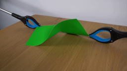
视觉工具实际返回图片 2
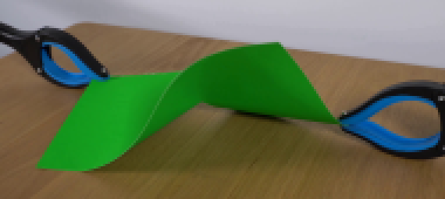
视觉工具实际返回图片 3

视觉工具实际返回图片 4
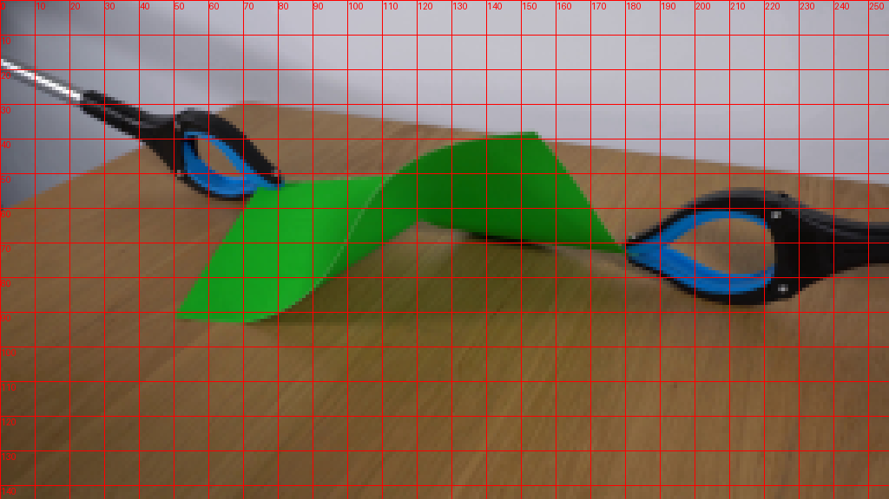
视觉工具实际返回图片 5
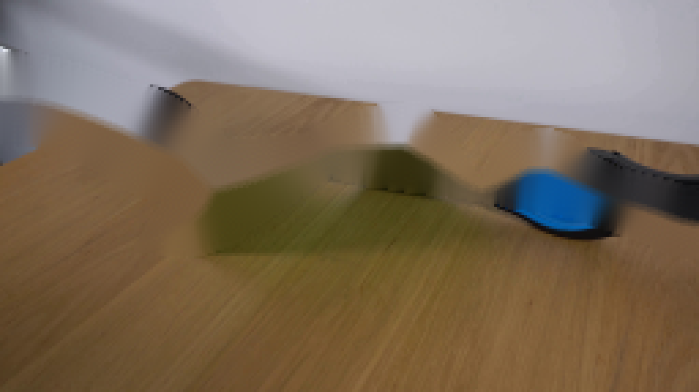
视觉工具实际返回图片 6
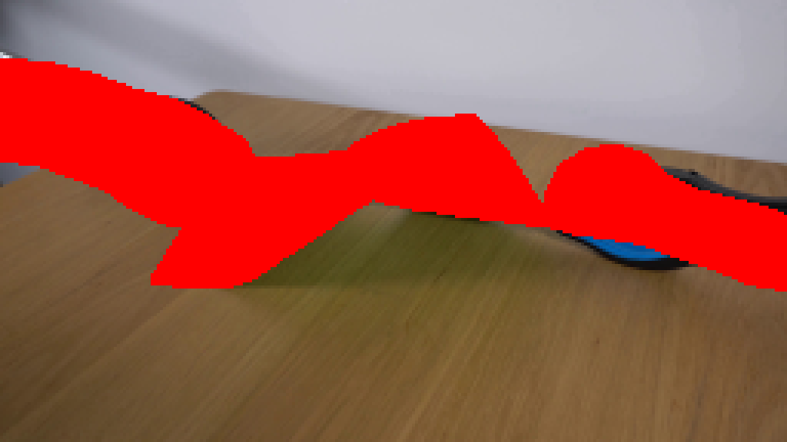
视觉工具实际返回图片 7
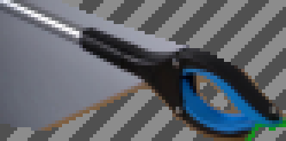
视觉工具实际返回图片 8
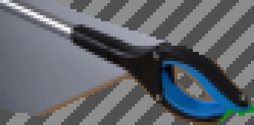
视觉工具实际返回图片 9
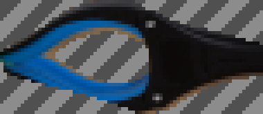
视觉工具实际返回图片 10
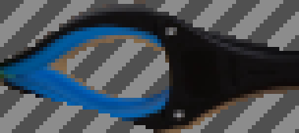
视觉工具实际返回图片 11
视觉工具实际返回图片 12
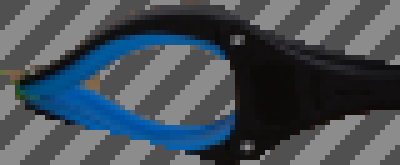
视觉工具实际返回图片 13
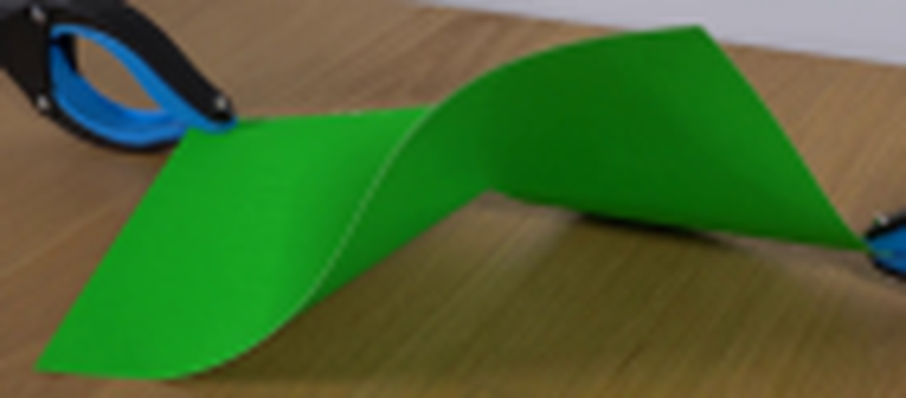
视觉工具实际返回图片 14
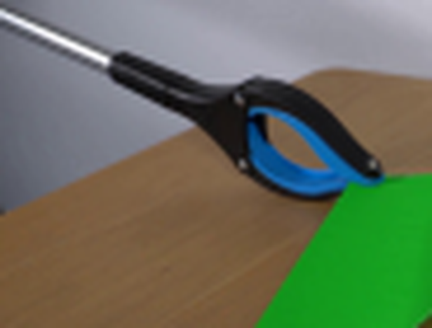
视觉工具实际返回图片 15
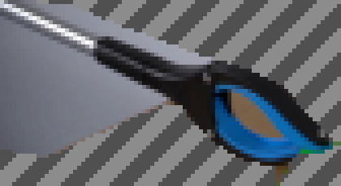
视觉工具实际返回图片 16
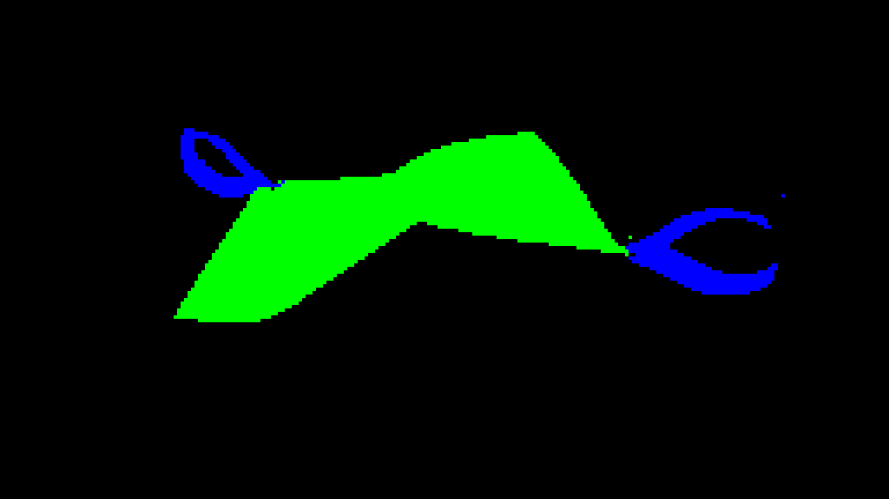
视觉工具实际返回图片 17
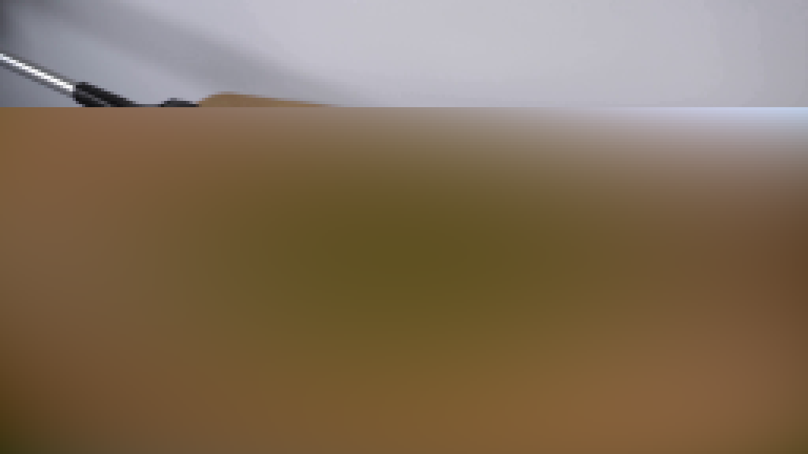
视觉工具实际返回图片 18
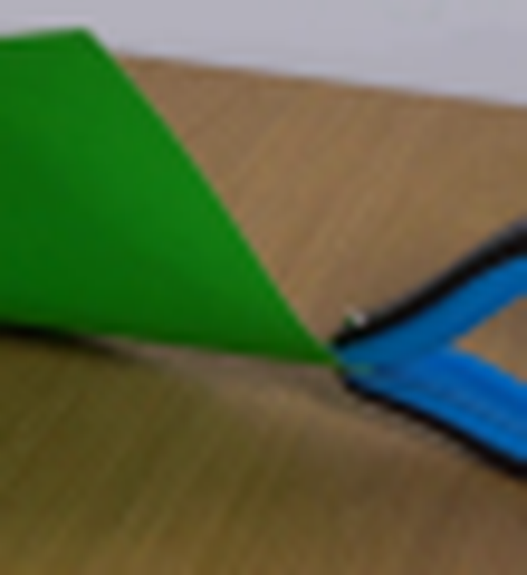
视觉工具实际返回图片 19
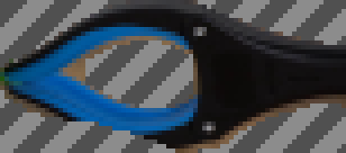
视觉工具实际返回图片 20
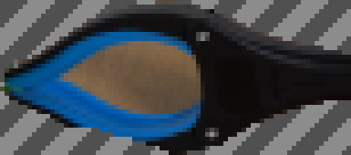
视觉工具实际返回图片 21
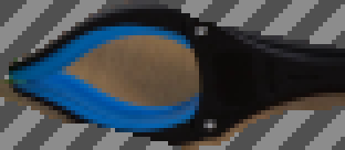
视觉工具实际返回图片 22
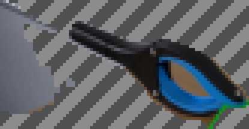
视觉工具实际返回图片 23
视觉工具实际返回图片 24
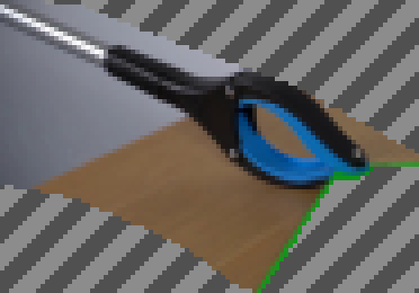
视觉工具实际返回图片 25
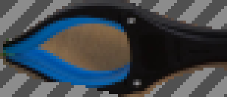
命令 41exit 0
/bin/bash -c 'ls -l generate.py 2>/dev/null || true'
命令 42exit 0
/bin/bash -c "python - <<'PY'
from PIL import Image, ImageDraw
im=Image.open('first_frame.png')
for name,box in [('lefttool',(0,15,100,85)),('righttool',(170,40,256,100))]:
c=im.crop(box).resize(((box[2]-box[0])*12,(box[3]-box[1])*12),Image.Resampling.NEAREST)
d=ImageDraw.Draw(c)
for x in range(box[0],box[2]+1,5):
xx=(x-box[0])*12
d.line((xx,0,xx,c.height),fill=(255,0,0),width=1)
d.text((xx+2,2),str(x),fill=(255,0,0))
for y in range(box[1],box[3]+1,5):
yy=(y-box[1])*12
d.line((0,yy,c.width,yy),fill=(255,0,0),width=1)
d.text((2,yy+2),str(y),fill=(255,0,0))
c.save(f'.tmp/{name}_grid.png')
PY"命令 43exit 1
/bin/bash -c 'python generate.py'
命令 44exit 0
/bin/bash -c 'python generate.py'
命令 45exit 0
/bin/bash -c "python - <<'PY'
from PIL import Image
for i in [0,2,5,8,10,12,15,19]:
im=Image.open(f'frames/{i:02d}.png')
im.resize((1024,576),Image.Resampling.NEAREST).save(f'.tmp/f{i:02d}.png')
PY"命令 46exit 0
/bin/bash -c "python - <<'PY'
import cv2,numpy as np
import generate
for name,arr in [('paper_mask',generate.PAPER_MASK*255),('paper_rgb',generate.PAPER_RGB),('bg',generate.BACKGROUND)]:
if arr.ndim==2: arr=cv2.cvtColor(arr,cv2.COLOR_GRAY2RGB)
cv2.imwrite(f'.tmp/{name}.png',cv2.cvtColor(cv2.resize(arr,None,fx=4,fy=4,interpolation=cv2.INTER_NEAREST),cv2.COLOR_RGB2BGR))
# print layer alpha frame 5 at some coords
layer,origin,pose=generate.render_paper(5)
print('origin',origin,'mask sum',generate.PAPER_MASK.sum(),'layer alpha nonzero',np.count_nonzero(layer[:,:,3]),'bbox',cv2.boundingRect(layer[:,:,3]))
cv2.imwrite('.tmp/paper_layer5.png',cv2.cvtColor(cv2.resize(layer,None,fx=4,fy=4,interpolation=cv2.INTER_NEAREST),cv2.COLOR_RGBA2BGRA))
PY"命令 47exit 0
/bin/bash -c "nl -ba generate.py | sed -n '180,340p'"
命令 48exit 0
/bin/bash -c "python generate.py && python - <<'PY'
import generate, numpy as np, cv2
layer,origin,pose=generate.render_paper(5)
print('alpha',np.count_nonzero(layer[:,:,3]),'bbox',cv2.boundingRect(layer[:,:,3]),'origin',origin)
PY"命令 49exit 0
/bin/bash -c "python - <<'PY'
from PIL import Image
for i in [0,3,6,9,12,15,19]:
im=Image.open(f'frames/{i:02d}.png'); im.resize((1024,576),Image.Resampling.NEAREST).save(f'.tmp/f{i:02d}.png')
PY"命令 50exit 0
/bin/bash -c "python - <<'PY'
import generate,cv2,numpy as np
for name,m in [('PAPER',generate.PAPER_MASK*255),('LEFT',generate.LEFT_TOOL[:,:,3]),('RIGHT',generate.RIGHT_TOOL[:,:,3])]:
cv2.imwrite(f'.tmp/{name}_mask.png',cv2.resize(m,None,fx=8,fy=8,interpolation=cv2.INTER_NEAREST))
PY"命令 51exit 0
/bin/bash -c "python - <<'PY'
import cv2, numpy as np
im=cv2.imread('first_frame.png'); hsv=cv2.cvtColor(im,cv2.COLOR_BGR2HSV)
# find paper hue segmentation and right tip behavior
for x in range(145,185,2):
ys=[]
for y in range(34,80):
h,s,v=hsv[y,x]
if 38<=h<=82 and s>=105 and v>=24: ys.append(y)
print(x, (min(ys),max(ys)) if ys else None)
PY"命令 52exit 0
/bin/bash -c "sed -n '1,220p' generate.py"
命令 53exit 0
/bin/bash -c "sed -n '221,460p' generate.py"
命令 54exit 0
/bin/bash -c 'git status --short; wc -l generate.py; ls -lh frames index.html inspection.png preview.mp4 pixels.npz 2>/dev/null'
命令 55exit 0
/bin/bash -c "python - <<'PY'
import cv2,numpy as np
for i in [1,2,3,4,5,6,7,8,9,10,11,12,13,14,15,16,17,18,19]:
im=cv2.imread(f'frames/{i:02d}.png')
# green paper centroid bbox, blue tool centroids
hsv=cv2.cvtColor(im,cv2.COLOR_BGR2HSV)
g=((hsv[:,:,0]>=38)&(hsv[:,:,0]<=82)&(hsv[:,:,1]>=105)&(hsv[:,:,2]>=24))
ys,xs=np.where(g)
print(i,'green',int(g.sum()), (int(xs.min()),int(ys.min()),int(xs.max()),int(ys.max())) if len(xs) else None, 'mean',np.round([xs.mean(),ys.mean()],1) if len(xs) else None)
PY"命令 56exit 0
/bin/bash -c "python - <<'PY' import generate for i in [1,5,8,10,12,15,19]: l,o,p=generate.render_paper(i) print(i,'gap',generate.pose(i)[4], 'alpha', (l[:,:,3]>0).sum(), 'rgb diff vs src', abs(l[:,:,:3].astype(int)-generate.PAPER_RGB.astype(int)).mean()) PY"
命令 57exit 0
/bin/bash -c "python generate.py && python - <<'PY'
from PIL import Image
for i in [1,5,8,10,12,15,19]:
Image.open(f'frames/{i:02d}.png').resize((1024,576),Image.Resampling.NEAREST).save(f'.tmp/f{i:02d}.png')
PY"命令 58exit 0
/bin/bash -c "python - <<'PY'
import generate,cv2,numpy as np
l,o,p=generate.render_paper(19)
# save layer and composite at 8x
cv2.imwrite('.tmp/paperlayer19.png',cv2.cvtColor(cv2.resize(l,None,fx=4,fy=4,interpolation=cv2.INTER_NEAREST),cv2.COLOR_RGBA2BGRA))
PY"命令 59exit 0
/bin/bash -c "python - <<'PY'
import generate,cv2,numpy as np
# save each source asset with nearest 8x
for n,arr in [('paper',generate.PAPER_RGB),('left',generate.LEFT_TOOL[:,:,:3]),('right',generate.RIGHT_TOOL[:,:,:3]),('bg',generate.BACKGROUND)]:
cv2.imwrite(f'.tmp/asset_{n}.png',cv2.cvtColor(cv2.resize(arr,None,fx=8,fy=8,interpolation=cv2.INTER_NEAREST),cv2.COLOR_RGB2BGR))
PY"命令 60exit 0
/bin/bash -c "python - <<'PY'
import cv2, numpy as np
im=cv2.imread('first_frame.png'); hsv=cv2.cvtColor(im,cv2.COLOR_BGR2HSV)
# table model based on manually clear rectangle x=95..160,y=95..143 and y=35..45; print actual ranges
for y in [35,36,37,38,39,40,41,42,43,44,45,46,47,48]:
vals=im[y,100:165]
print(y, vals.mean(0)[::-1], hsv[y,100:165].mean(0))
PY"命令 61exit 0
/bin/bash -c "python - <<'PY'
import cv2,numpy as np
im=cv2.imread('first_frame.png'); hsv=cv2.cvtColor(im,cv2.COLOR_BGR2HSV)
for x in [45,48,50,52,55,60,65,70,75,80,85,90,95,100,105,110,115,120,125,130,135,140,145,150,155,160,165,170,175,180]:
# paper top/bottom via green criterion
ys=[]
for y in range(34,100):
h,s,v=hsv[y,x]
if 38<=h<=82 and s>=105 and v>=24: ys.append(y)
print(x,(min(ys),max(ys)) if ys else None)
PY"命令 62exit 0
/bin/bash -c "python - <<'PY'
from PIL import Image
import numpy as np
for i in [8,12,16,19]:
a=np.array(Image.open(f'frames/{i:02d}.png'))
Image.fromarray(a[25:105,35:210]).resize((1050,480),Image.Resampling.NEAREST).save(f'.tmp/action{i}.png')
PY"命令 63exit 0
/bin/bash -c "python - <<'PY'
import generate,cv2,numpy as np
for i in [8,12,19]:
l,o,p=generate.render_paper(i)
cv2.imwrite(f'.tmp/layer{i}.png',cv2.cvtColor(cv2.resize(l,None,fx=8,fy=8,interpolation=cv2.INTER_NEAREST),cv2.COLOR_RGBA2BGRA))
PY"命令 64exit 0
/bin/bash -c "python - <<'PY'
from PIL import Image
import numpy as np
im=Image.open('first_frame.png')
a=np.array(im)
# print a few crop rows/columns sampled as blocks to inspect actual color
for box in [(50,85,90,95),(60,80,100,94),(70,75,110,93),(80,65,115,90),(85,55,120,80)]:
c=a[box[1]:box[3],box[0]:box[2]]
print(box,'mean',c.reshape(-1,3).mean(0),'median',np.median(c.reshape(-1,3),axis=0))
PY"命令 65exit 0
/bin/bash -c "python - <<'PY'
from PIL import Image
import numpy as np
im=np.array(Image.open('first_frame.png'))
# extract crop x45:185 y35:98 enlarge smooth
Image.fromarray(im[35:98,45:185]).resize((1120,504),Image.Resampling.NEAREST).save('.tmp/paper_src_near.png')
PY"命令 66exit 0
/bin/bash -c "python - <<'PY'
from PIL import Image
im=Image.open('first_frame.png')
# enlarged final crop 35:200, 25:105 with smooth vs nearest for inspection
im.crop((35,25,200,105)).resize((990,480),Image.Resampling.LANCZOS).save('.tmp/orig_action_smooth.png')
PY"命令 67exit 0
/bin/bash -c "python - <<'PY'
import cv2,numpy as np
im=cv2.imread('first_frame.png')
hsv=cv2.cvtColor(im,cv2.COLOR_BGR2HSV)
# use every pixel in crop classify paper/tool/background and save quantized labels to inspect
crop=im[25:100,35:200]
h=cv2.cvtColor(crop,cv2.COLOR_BGR2HSV)
out=np.zeros_like(crop)
paper=(h[:,:,0]>=35)&(h[:,:,0]<=95)&(h[:,:,1]>=90)&(h[:,:,2]>=20)
blue=(h[:,:,0]>=95)&(h[:,:,0]<=135)&(h[:,:,1]>=40)
dark=h[:,:,2]<70
out[paper]=(0,255,0);out[blue]=(255,0,0);out[dark]=(255,255,255)
cv2.imwrite('.tmp/labels_crop.png',cv2.resize(out,None,fx=6,fy=6,interpolation=cv2.INTER_NEAREST))
PY"命令 68exit 0
/bin/bash -c "python - <<'PY'
import cv2,numpy as np
im=cv2.imread('first_frame.png'); hsv=cv2.cvtColor(im,cv2.COLOR_BGR2HSV)
# Inspect green at y=75 with hue print
for y in [55,60,65,70,75,80,85,90]:
print('row',y)
for x in range(45,186,5):
h,s,v=hsv[y,x]
if s>60 and v>20: print(x,(int(h),int(s),int(v)),end=' ')
print()
PY"命令 69exit 0
/bin/bash -c "python - <<'PY' import generate for y in [40,45,50,55,60,65,70,75,80,85,90]: print(y,[tuple(int(v) for v in generate.BACKGROUND[y,x]) for x in [80,100,120,140,160,180]]) PY"
命令 70exit 0
/bin/bash -c "python - <<'PY'
import cv2, numpy as np
im=cv2.imread('first_frame.png'); hsv=cv2.cvtColor(im,cv2.COLOR_BGR2HSV)
# Background using row-wise linear interpolation from left boundary and right boundary, but use patch median from columns with clean table
# We'll estimate each row RGB as polynomial in x using only pixels whose local 5x5 patch is all table-like (hue 5..35,s 60..210,v 40..190)
h,s,v=cv2.split(hsv)
table=((h>=5)&(h<=35)&(s>=55)&(s<=220)&(v>=35)&(v<=200))
# remove wall y<35
Y,X=np.mgrid[:144,:256]
# local homogeneity via erode
clean=cv2.erode(table.astype(np.uint8),np.ones((7,7),np.uint8))>0
bg=np.zeros_like(im)
for y in range(35,144):
xs=np.flatnonzero(clean[y])
if len(xs)<10: continue
for c in range(3):
# robust low degree fit
co=np.polyfit(xs,im[y,xs,c],2)
bg[y,:,c]=np.polyval(co,np.arange(256))
# copy wall
bg[:35]=im[:35]
# blend bottom from original table
cv2.imwrite('.tmp/bg_rowfit.png',bg)
# print values
for y in [45,60,75,90,110]:
print(y,[tuple(int(a) for a in bg[y,x][::-1]) for x in [80,100,120,140,160,180]])
PY"命令 71exit 0
/bin/bash -c "python generate.py && python - <<'PY'
from PIL import Image
for i in [1,5,8,10,12,15,19]:
Image.open(f'frames/{i:02d}.png').resize((1024,576),Image.Resampling.NEAREST).save(f'.tmp/f{i:02d}.png')
PY"命令 72exit 0
/bin/bash -c "python - <<'PY'
import generate,cv2,numpy as np
# side by side original and frame 19, enlarged 3x for visual check
orig=cv2.cvtColor(cv2.imread('first_frame.png'),cv2.COLOR_BGR2RGB)
f=cv2.imread('frames/19.png'); f=cv2.cvtColor(f,cv2.COLOR_BGR2RGB)
pair=np.concatenate([orig,f],axis=1)
cv2.imwrite('.tmp/pair.png',cv2.cvtColor(cv2.resize(pair,None,fx=2,fy=2,interpolation=cv2.INTER_NEAREST),cv2.COLOR_RGB2BGR))
PY"命令 73exit 0
/bin/bash -c "python - <<'PY'
from PIL import Image
im=Image.open('first_frame.png')
# crop at 6x with bicubic to inspect jaggedness and real paper colors
im.crop((40,30,195,100)).resize((930,420),Image.Resampling.BICUBIC).save('.tmp/orig_bi6.png')
PY"命令 74exit 0
/bin/bash -c "python generate.py && python - <<'PY'
import numpy as np
from PIL import Image
import json, cv2
frames=np.stack([np.asarray(Image.open(f'frames/{i:02d}.png')) for i in range(20)])
first=np.asarray(Image.open('first_frame.png'))
print('shape',frames.shape,'dtype',frames.dtype,'first identical',np.array_equal(frames[0],first))
print('frame deltas', [int(np.abs(frames[i].astype(int)-frames[i-1].astype(int)).mean()*1000) for i in range(1,20)])
print('nan',np.isnan(frames).any(),'range',frames.min(),frames.max())
print('outputs', sorted(p.name for p in __import__('pathlib').Path('.').iterdir() if p.is_file()))
PY"命令 75exit 0
/bin/bash -c "python - <<'PY'
from pathlib import Path
import json
p=Path('index.html')
s=p.read_text()
print('html bytes',p.stat().st_size,'contains player ready', '__pixelReady' in s)
try:
import cv2
cap=cv2.VideoCapture('preview.mp4')
print('mp4 frames',int(cap.get(cv2.CAP_PROP_FRAME_COUNT)),'fps',cap.get(cv2.CAP_PROP_FPS),'size',int(cap.get(cv2.CAP_PROP_FRAME_WIDTH)),int(cap.get(cv2.CAP_PROP_FRAME_HEIGHT)))
cap.release()
except Exception as e: print(e)
print('pixels.npz',Path('pixels.npz').stat().st_size)
PY"命令 76exit 1
/bin/bash -c "python - <<'PY'
import generate, cv2, numpy as np
for i in [8,10,12,15,19]:
l,o,p=generate.render_paper(i)
a=l[:,:,3]
print('i',i,'origin',o,'alpha',np.count_nonzero(a))
for y in range(30,90,5):
xs=np.flatnonzero(a[y]>100)
if len(xs):
runs=[];s=xs[0];last=s
for x in xs[1:]:
if x>last+1:runs.append((s+o[0],last+o[0]));s=x
last=x
runs.append((s+o[0],last+o[0]))
print(' ',y,runs)
PY"命令 77exit 1
/bin/bash -c "python - <<'PY'
import generate, numpy as np
for i in [0,4,8,10,12,15,19]:
l,o,p=generate.render_paper(i)
a=l[:,:,3]
ys,xs=np.where(a>100)
print('\\ni',i,'origin',o,'bbox',(xs.min()+o[0],ys.min()+o[1],xs.max()+o[0],ys.max()+o[1]),'alpha',len(xs),'pose',np.round(p,2))
for yy in range(0,a.shape[0],5):
xr=np.flatnonzero(a[yy]>100)
if len(xr):
runs=[]; st=xr[0]; last=st
for x in xr[1:]:
if x>last+1: runs.append((int(st+o[0]),int(last+o[0])));st=x
last=x
runs.append((int(st+o[0]),int(last+o[0])))
print(' y',yy+o[1],runs)
PY"命令 78exit 0
/bin/bash -c "python - <<'PY'
import generate, numpy as np
for i in [0,4,8,10,12,15,19]:
l,o,p=generate.render_paper(i)
a=l[:,:,3]
ys,xs=np.where(a>100)
print('\\ni',i,'origin',o,'bbox',(xs.min()+o[0],ys.min()+o[1],xs.max()+o[0],ys.max()+o[1]),'alpha',len(xs),'pose',p)
for yy in range(0,a.shape[0],5):
xr=np.flatnonzero(a[yy]>100)
if len(xr):
runs=[]; st=xr[0]; last=st
for x in xr[1:]:
if x>last+1: runs.append((int(st+o[0]),int(last+o[0])));st=x
last=x
runs.append((int(st+o[0]),int(last+o[0])))
print(' y',yy+o[1],runs)
PY"命令 79exit 0
/bin/bash -c "python - <<'PY'
from PIL import Image
for i in [8,10,12,15,19]:
Image.open(f'frames/{i:02d}.png').crop((35,25,200,105)).resize((990,480),Image.Resampling.NEAREST).save(f'.tmp/a{i}.png')
PY"命令 80exit 0
/bin/bash -c "python - <<'PY'
import cv2,numpy as np
# examine frame 19 bottom left paper bottom: does original paper lower edge at y93 vanish due crop/warp? output alpha ends y92 but bg shows table.
im=cv2.imread('frames/19.png'); hsv=cv2.cvtColor(im,cv2.COLOR_BGR2HSV)
# print rows 80..100 ranges
for y in range(75,101):
xs=np.flatnonzero((hsv[y,:,0]>=38)&(hsv[y,:,0]<=82)&(hsv[y,:,1]>=105)&(hsv[y,:,2]>=24))
if len(xs): print(y,xs.min(),xs.max(),len(xs))
PY"命令 81exit 0
/bin/bash -c "python - <<'PY'
from PIL import Image
import numpy as np
im=np.array(Image.open('first_frame.png'))
# crop the paper only and upscale with nearest then cubic to compare perceived color
Image.fromarray(im[35:95,50:182]).resize((1056,480),Image.Resampling.NEAREST).save('.tmp/paper_near.png')
Image.fromarray(im[35:95,50:182]).resize((1056,480),Image.Resampling.BICUBIC).save('.tmp/paper_bic.png')
PY"命令 82exit 0
/bin/bash -c "python - <<'PY'
import cv2,numpy as np
orig=cv2.imread('first_frame.png')
f1=cv2.imread('frames/01.png')
# diff in paper region
for name,im in [('orig',orig),('f1',f1)]:
hsv=cv2.cvtColor(im,cv2.COLOR_BGR2HSV)
g=((hsv[:,:,0]>=35)&(hsv[:,:,0]<=95)&(hsv[:,:,1]>=90)&(hsv[:,:,2]>=20))
print(name,'green n',g.sum(),'mean rgb',im[g].mean(0)[::-1])
# colors at known interior points
for p in [(80,75),(100,60),(140,50),(160,60),(100,80),(70,80)]:
x,y=p;print(p,'orig',orig[y,x][::-1],'f1',f1[y,x][::-1])
PY"命令 83exit 0
/bin/bash -c "python generate.py && python - <<'PY'
from PIL import Image
for i in [1,5,8,10,12,15,19]:
Image.open(f'frames/{i:02d}.png').resize((1024,576),Image.Resampling.NEAREST).save(f'.tmp/f{i:02d}.png')
PY"命令 84exit 0
/bin/bash -c "python generate.py && python - <<'PY'
from PIL import Image
for i in [8,10,12,15,19]:
Image.open(f'frames/{i:02d}.png').resize((1024,576),Image.Resampling.NEAREST).save(f'.tmp/f{i:02d}.png')
PY"视觉工具实际返回图片 26
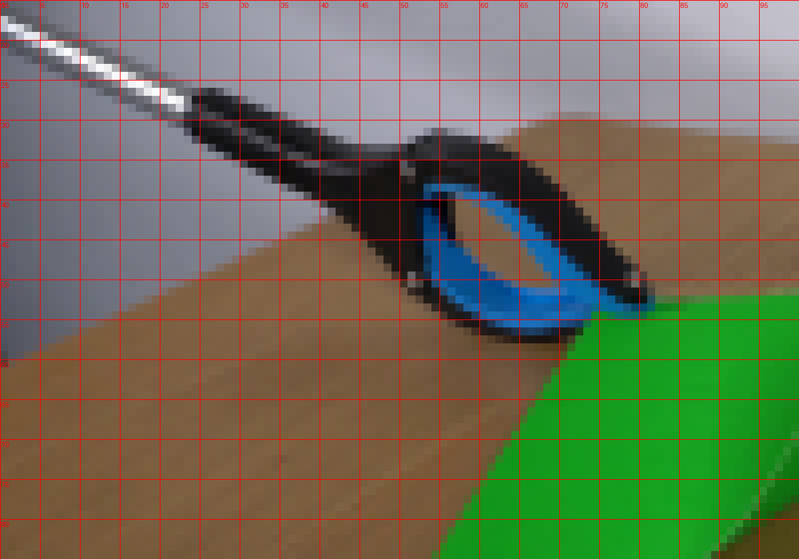
视觉工具实际返回图片 27
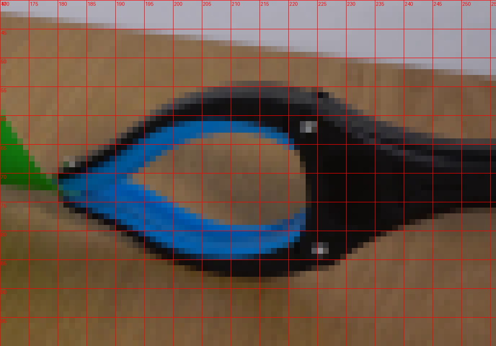
视觉工具实际返回图片 28
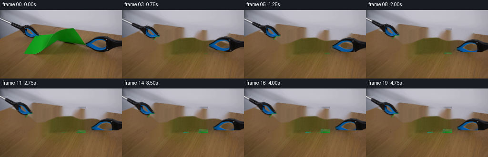
视觉工具实际返回图片 29
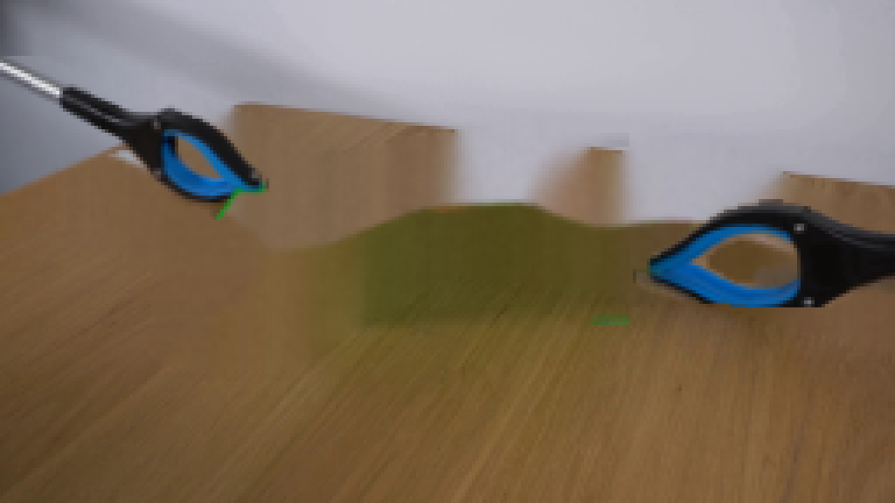
视觉工具实际返回图片 30
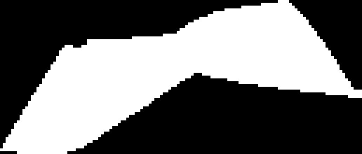
视觉工具实际返回图片 31

视觉工具实际返回图片 32
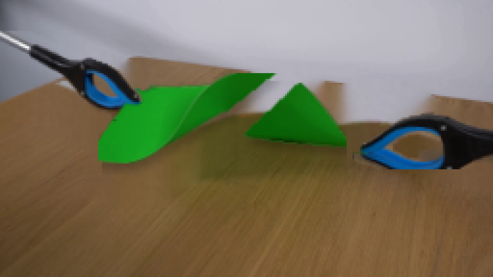
视觉工具实际返回图片 33
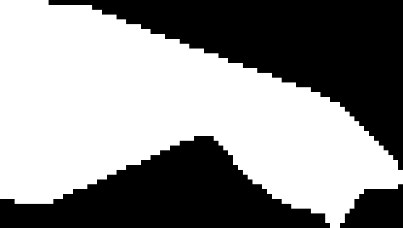
视觉工具实际返回图片 34
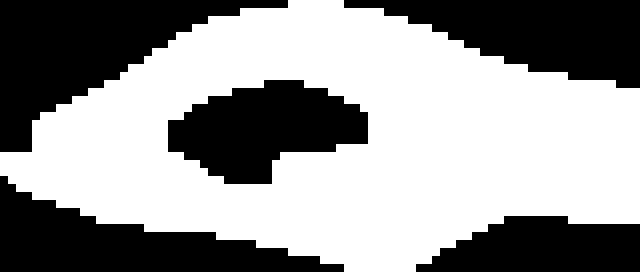
视觉工具实际返回图片 35
视觉工具实际返回图片 36
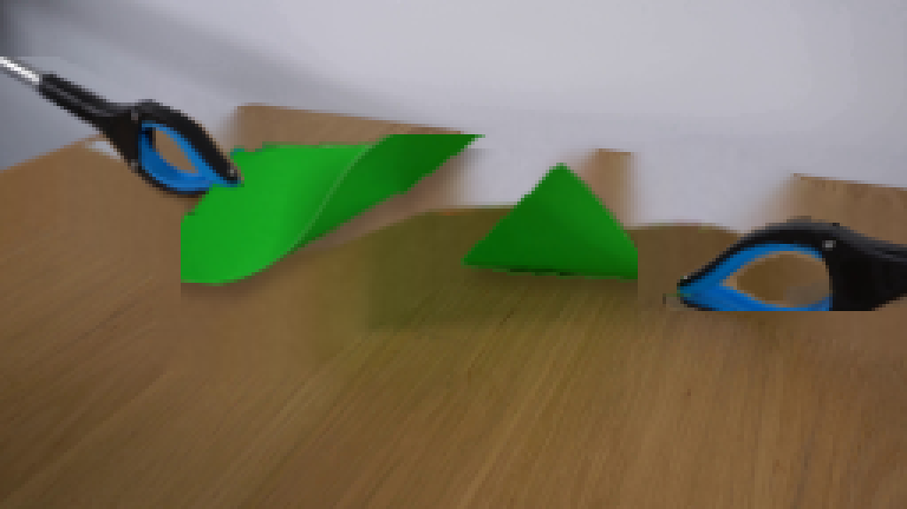
视觉工具实际返回图片 37
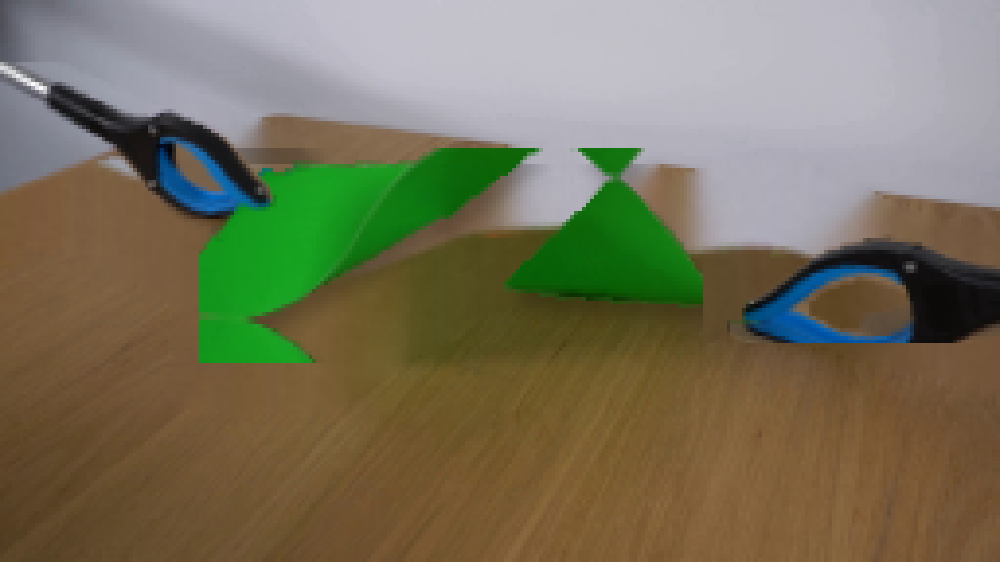
视觉工具实际返回图片 38
视觉工具实际返回图片 39
视觉工具实际返回图片 40
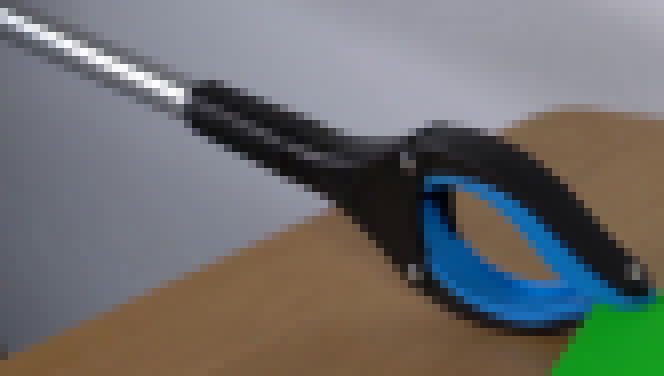
视觉工具实际返回图片 41
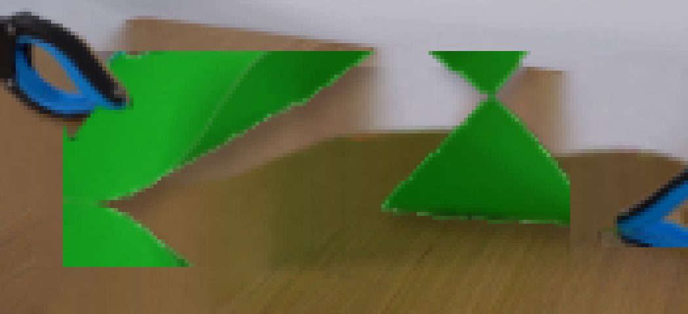
视觉工具实际返回图片 42
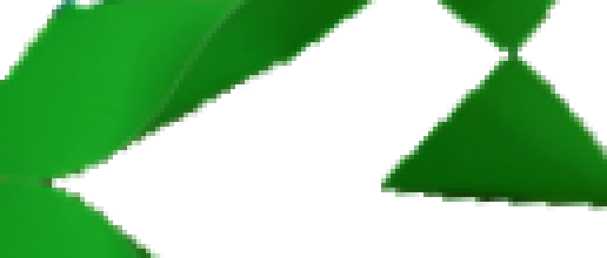
视觉工具实际返回图片 43
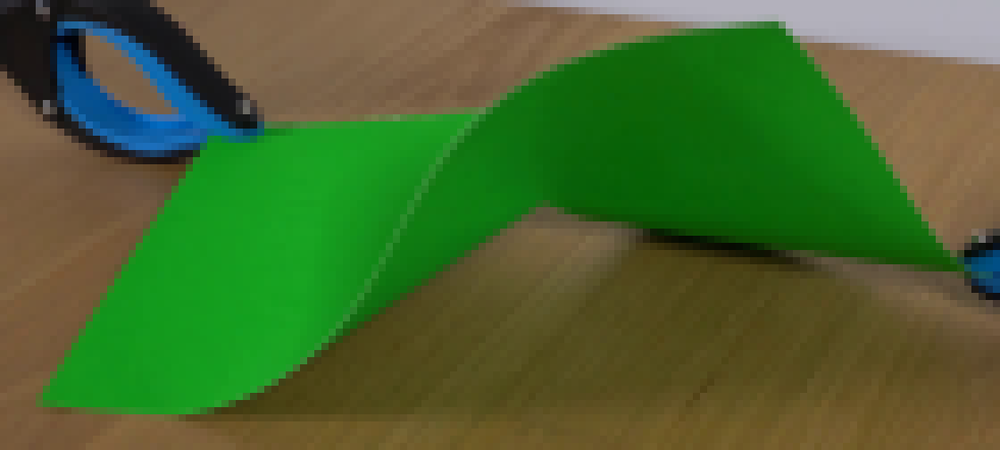
视觉工具实际返回图片 44
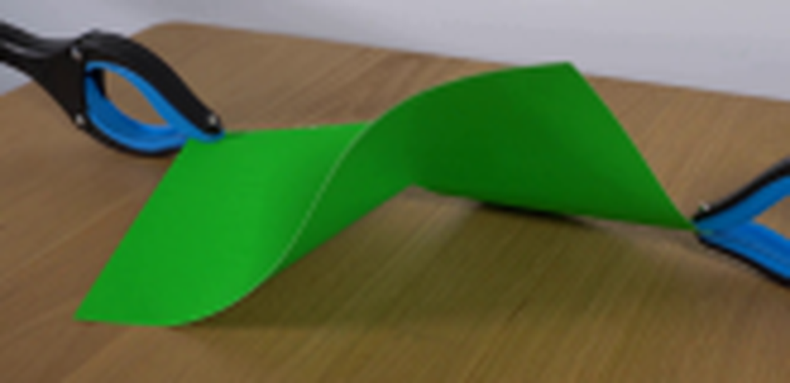
视觉工具实际返回图片 45
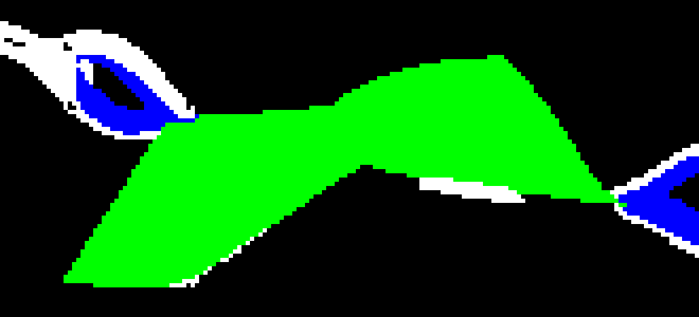
视觉工具实际返回图片 46

视觉工具实际返回图片 47
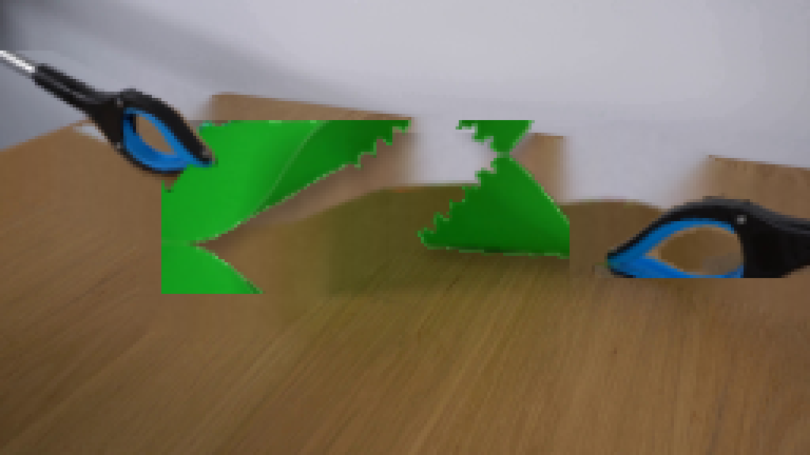
视觉工具实际返回图片 48
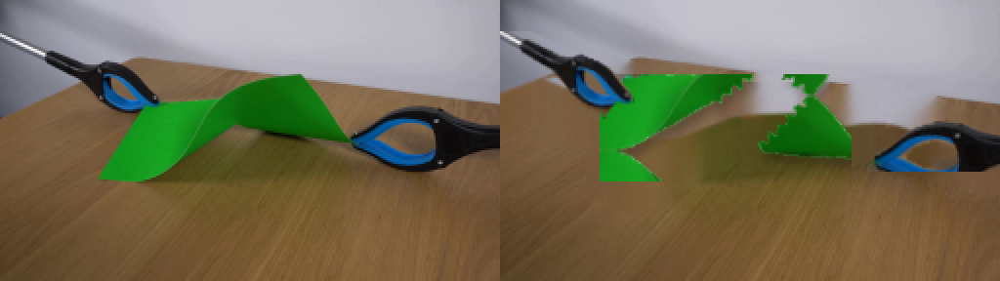
视觉工具实际返回图片 49
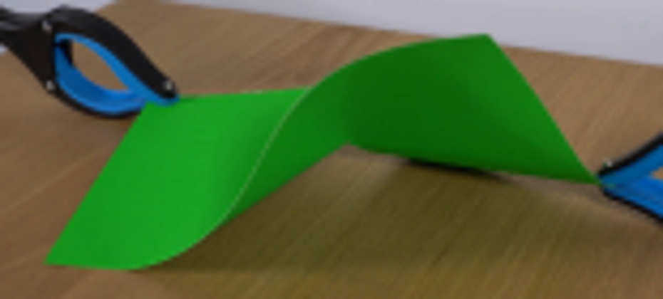
视觉工具实际返回图片 50

视觉工具实际返回图片 51
视觉工具实际返回图片 52
视觉工具实际返回图片 53
视觉工具实际返回图片 54
视觉工具实际返回图片 55

视觉工具实际返回图片 56
视觉工具实际返回图片 57

保存候选 9 份；完成命令 84 次；可验证图片返回 57 张。原始 API 响应与完整日志保留在本地。